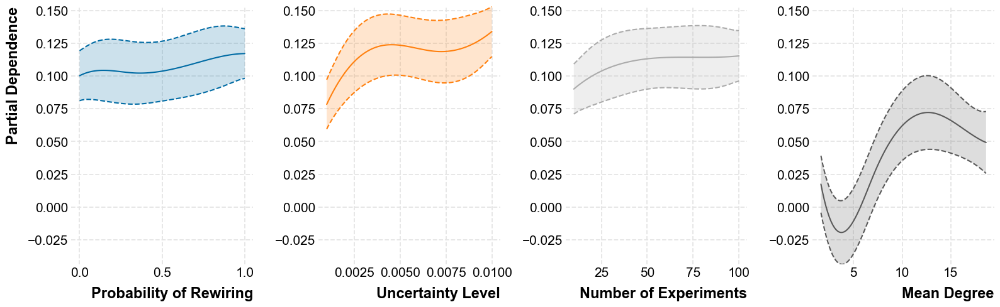

# Hello Max!
import numpy as np
import networkx as nx
from agent import Agent
from model import Model
from hybrid_networks import create_hybrid_network
from tqdm import tqdm
from hybrid_networks_clean import rewire_network, randomize_network_v2, create_hybrid_network
%load_ext autoreload
%autoreload 2 Plotting results
import opinionated
import matplotlib.pyplot as plt
plt.style.use("opinionated_j")
import colormaps as cmaps Now downloading: Roboto Condensed
Added new font as Roboto Condensed Light
Added new font as Roboto Condensed
Added new font as Roboto Condensed
Added new font as Roboto Condensed Black
Now downloading: Montserrat
Added new font as Montserrat Thin Light
Added new font as Montserrat Thin
Added new font as Montserrat Thin
Added new font as Montserrat Thin Black
Now downloading: Source Code Pro
Added new font as Source Code Pro ExtraLight Light
Added new font as Source Code Pro ExtraLight
Added new font as Source Code Pro ExtraLight
Added new font as Source Code Pro ExtraLight Black
Now downloading: Fira Sans
Added new font as Fira Sans Light
Added new font as Fira Sans
Added new font as Fira Sans
Added new font as Fira Sans Black
Now downloading: Fira Sans Condensed
Added new font as Fira Sans Condensed Light
Added new font as Fira Sans Condensed
Added new font as Fira Sans Condensed
Added new font as Fira Sans Condensed Black
Now downloading: IBM Plex Sans
Added new font as IBM Plex Sans Light
Added new font as IBM Plex Sans
Added new font as IBM Plex Sans
Now downloading: Space Grotesk
Added new font as Space Grotesk Light Light
Added new font as Space Grotesk Light
Added new font as Space Grotesk Light
Now downloading: Space Mono
Added new font as Space Mono
Added new font as Space Mono
Now downloading: Roboto
Added new font as Roboto Light
Added new font as Roboto
Added new font as Roboto
Added new font as Roboto Black
Now downloading: Jost
Added new font as Jost Light
Added new font as Jost
Added new font as Jost
Added new font as Jost Black
Now downloading: Titillium Web
Added new font as Titillium Web Light
Added new font as Titillium Web
Added new font as Titillium Web
Added new font as Titillium Web Blackoutput_dir = 'talk_munich/images/'import pandas as pd
from pygam import LogisticGAM,LinearGAM, s
from sklearn.model_selection import train_test_splitdata_df = pd.read_csv('bayesagent_perceptron_results_df.csv')import dill
# Use dill to deserialize the graph from a file
with open('data_proc/perceptron_graph_pre_1979.pkl', 'rb') as f:
G_perceptron = dill.load(f)randomize_by = [0,.2,.4,.6,.8,1.]import graph_tool.all as gt
for this_rand_value in randomize_by:
G_randomized = randomize_network_v2(G_perceptron, p_rewiring=this_rand_value)
# Convert NetworkX graph to graph_tool graph
g = gt.Graph(directed=True)
# Create a mapping from NetworkX nodes to graph_tool vertices
node_map = {n: g.add_vertex() for n in G_randomized.nodes()}
# Add edges to the graph_tool graph
for u, v in G_randomized.edges():
g.add_edge(node_map[u], node_map[v])
pos = gt.sfdp_layout(g)
dprms = dict(fmt="png", output_size=(1200, 1200))
gt.graph_draw( g, pos, output =output_dir + f"perceptron_graph_randomized_p={this_rand_value}.png")import powerlaw
def plot_loglog(G, filename=None):
# Calculate degree frequency
degree_freq = nx.degree_histogram(G)
degrees = range(len(degree_freq))
print(degree_freq)
# Filter out zero frequencies to avoid issues in loglog plots and fitting
nonzero_degrees = [degree for degree, freq in enumerate(degree_freq) if freq > 0]
nonzero_freqs = [freq for freq in degree_freq if freq > 0]
# Fit the power law model to the nonzero frequencies
fit = powerlaw.Fit(nonzero_freqs, discrete=True, xmin=min(nonzero_degrees))
alpha, sigma = fit.alpha, fit.sigma
print(f"Alpha: {alpha}, Sigma: {sigma}")
#
# Plot the original degree distribution
plt.figure(figsize=(8, 8))
plt.loglog(nonzero_degrees, [d / len(G) for d in nonzero_freqs], 'o', c='#ab0b00', alpha=.9, label='Degree distribution')
# Generate and plot the power law trend line over the observed range
print(nonzero_degrees)
#plt.loglog(nonzero_degrees, [fit.power_law.pdf(d) for d in nonzero_degrees], 'k-', label=f'Power law fit (α={np.round(alpha,2)})')
plt.xlabel('Degree')
plt.ylabel('Frequency of Degree')
#plt.legend(pos,loc='upper right')
if filename is not None:
plt.savefig(filename, dpi=300, transparent=True)
plt.close()
#plt.show()
for this_rand_value in randomize_by:
G_randomized = randomize_network_v2(G_perceptron, p_rewiring=this_rand_value)
plot_loglog(G_randomized, filename = output_dir + f"perceptron_graph_randomized_p={this_rand_value}_powerlaw_fit.png")[0, 1825, 664, 343, 157, 109, 37, 39, 48, 26, 17, 16, 13, 15, 7, 6, 15, 7, 9, 6, 13, 13, 10, 3, 4, 8, 10, 3, 8, 4, 3, 6, 3, 3, 2, 1, 4, 1, 2, 3, 1, 3, 4, 0, 1, 3, 3, 1, 3, 0, 3, 2, 0, 0, 2, 0, 0, 4, 1, 1, 1, 0, 0, 0, 0, 1, 3, 0, 0, 0, 2, 0, 0, 0, 2, 1, 0, 1, 1, 1, 0, 1, 1, 0, 0, 0, 0, 0, 0, 0, 0, 0, 0, 1, 0, 0, 0, 0, 0, 0, 0, 0, 0, 0, 0, 0, 0, 0, 0, 0, 0, 0, 0, 0, 0, 0, 0, 0, 0, 0, 0, 0, 0, 0, 0, 0, 0, 0, 0, 1, 0, 0, 0, 0, 0, 0, 1, 0, 0, 0, 0, 0, 0, 0, 0, 0, 0, 0, 0, 0, 0, 0, 0, 0, 0, 0, 0, 0, 0, 0, 0, 0, 0, 0, 0, 0, 0, 0, 1, 0, 0, 0, 0, 0, 0, 0, 0, 0, 0, 0, 0, 0, 0, 0, 0, 1, 0, 0, 0, 0, 0, 0, 0, 0, 0, 0, 0, 0, 0, 0, 0, 0, 0, 0, 0, 0, 0, 0, 0, 0, 0, 0, 0, 0, 0, 0, 0, 0, 0, 0, 1, 0, 0, 0, 0, 0, 0, 0, 0, 0, 0, 0, 0, 0, 0, 0, 0, 0, 0, 0, 0, 0, 0, 0, 0, 0, 0, 0, 0, 0, 0, 0, 0, 1, 0, 0, 0, 1, 0, 0, 0, 0, 0, 0, 0, 0, 0, 0, 0, 0, 0, 0, 0, 0, 0, 0, 0, 0, 0, 0, 0, 0, 0, 0, 0, 0, 0, 0, 0, 0, 0, 0, 0, 0, 0, 0, 0, 0, 0, 0, 0, 0, 0, 0, 0, 0, 0, 0, 0, 0, 0, 0, 0, 0, 0, 0, 0, 0, 0, 0, 0, 0, 0, 0, 0, 0, 0, 0, 0, 0, 0, 0, 0, 0, 0, 0, 0, 0, 0, 0, 0, 0, 0, 0, 0, 0, 0, 0, 0, 0, 0, 0, 0, 0, 0, 0, 0, 0, 0, 0, 0, 0, 0, 0, 0, 0, 0, 0, 0, 0, 0, 0, 0, 0, 0, 0, 0, 0, 0, 0, 0, 0, 0, 0, 0, 0, 0, 0, 0, 0, 0, 0, 0, 0, 0, 0, 0, 0, 0, 0, 0, 0, 0, 0, 0, 0, 0, 0, 0, 0, 0, 0, 0, 0, 0, 0, 0, 0, 0, 0, 0, 0, 0, 0, 0, 0, 0, 0, 0, 0, 0, 0, 0, 0, 0, 0, 0, 0, 0, 0, 0, 0, 0, 0, 0, 0, 0, 0, 0, 0, 0, 0, 0, 0, 0, 0, 0, 0, 0, 0, 0, 0, 0, 0, 0, 0, 0, 0, 0, 0, 0, 0, 0, 0, 0, 0, 0, 0, 0, 0, 0, 0, 0, 0, 0, 0, 0, 0, 0, 0, 0, 0, 0, 1]
Alpha: 1.462566072925915, Sigma: 0.05413926382925807
[1, 2, 3, 4, 5, 6, 7, 8, 9, 10, 11, 12, 13, 14, 15, 16, 17, 18, 19, 20, 21, 22, 23, 24, 25, 26, 27, 28, 29, 30, 31, 32, 33, 34, 35, 36, 37, 38, 39, 40, 41, 42, 44, 45, 46, 47, 48, 50, 51, 54, 57, 58, 59, 60, 65, 66, 70, 74, 75, 77, 78, 79, 81, 82, 93, 129, 136, 168, 185, 220, 253, 257, 493]
[150, 932, 900, 582, 355, 157, 76, 53, 32, 30, 19, 17, 16, 9, 13, 8, 7, 10, 9, 16, 5, 15, 12, 6, 6, 4, 2, 4, 1, 3, 2, 8, 3, 4, 3, 2, 0, 2, 6, 0, 2, 5, 0, 1, 2, 0, 1, 2, 1, 0, 1, 2, 3, 1, 0, 0, 0, 1, 0, 0, 1, 3, 0, 1, 2, 0, 0, 2, 0, 0, 0, 0, 0, 0, 0, 1, 0, 0, 0, 0, 0, 0, 0, 0, 0, 0, 0, 0, 0, 0, 0, 0, 0, 0, 0, 0, 0, 0, 0, 0, 0, 0, 0, 0, 0, 0, 0, 0, 0, 0, 1, 0, 0, 0, 0, 0, 1, 0, 0, 0, 0, 0, 0, 0, 0, 0, 0, 0, 0, 0, 0, 0, 0, 0, 0, 0, 0, 0, 1, 0, 0, 0, 0, 0, 0, 0, 0, 0, 0, 0, 0, 0, 1, 0, 0, 0, 0, 0, 0, 0, 0, 0, 0, 0, 0, 0, 0, 0, 0, 0, 0, 0, 0, 0, 0, 0, 0, 0, 1, 0, 0, 0, 0, 0, 0, 0, 0, 0, 0, 0, 0, 0, 0, 0, 0, 0, 0, 0, 0, 0, 0, 0, 0, 0, 0, 0, 1, 0, 0, 0, 0, 1, 0, 0, 0, 0, 0, 0, 0, 0, 0, 0, 0, 0, 0, 0, 0, 0, 0, 0, 0, 0, 0, 0, 0, 0, 0, 0, 0, 0, 0, 0, 0, 0, 0, 0, 0, 0, 0, 0, 0, 0, 0, 0, 0, 0, 0, 0, 0, 0, 0, 0, 0, 0, 0, 0, 0, 0, 0, 0, 0, 0, 0, 0, 0, 0, 0, 0, 0, 0, 0, 0, 0, 0, 0, 0, 0, 0, 0, 0, 0, 0, 0, 0, 0, 0, 0, 0, 0, 0, 0, 0, 0, 0, 0, 0, 0, 0, 0, 0, 0, 0, 0, 0, 0, 0, 0, 0, 0, 0, 0, 0, 0, 0, 0, 0, 0, 0, 0, 0, 0, 0, 0, 0, 0, 0, 0, 0, 0, 0, 0, 0, 0, 0, 0, 0, 0, 0, 0, 0, 0, 0, 0, 0, 0, 0, 0, 0, 0, 0, 0, 0, 0, 0, 0, 0, 0, 0, 0, 0, 0, 0, 0, 0, 0, 0, 0, 0, 0, 0, 0, 0, 0, 0, 0, 0, 0, 0, 0, 0, 0, 0, 0, 0, 0, 0, 0, 0, 0, 0, 1]
Calculating best minimal value for power law fit
Alpha: 1.5138407789113506, Sigma: 0.07576168959484554
[0, 1, 2, 3, 4, 5, 6, 7, 8, 9, 10, 11, 12, 13, 14, 15, 16, 17, 18, 19, 20, 21, 22, 23, 24, 25, 26, 27, 28, 29, 30, 31, 32, 33, 34, 35, 37, 38, 40, 41, 43, 44, 46, 47, 48, 50, 51, 52, 53, 57, 60, 61, 63, 64, 67, 75, 110, 116, 138, 152, 178, 206, 211, 400]
[148, 538, 756, 743, 517, 297, 145, 68, 49, 35, 22, 24, 17, 9, 15, 9, 7, 11, 8, 17, 7, 9, 2, 4, 4, 3, 2, 2, 4, 5, 1, 6, 4, 2, 0, 0, 2, 0, 1, 3, 4, 0, 1, 0, 2, 0, 0, 1, 0, 1, 0, 1, 3, 1, 0, 0, 1, 0, 0, 0, 0, 0, 0, 0, 0, 0, 0, 0, 0, 0, 0, 0, 0, 0, 0, 0, 0, 0, 0, 0, 0, 0, 0, 1, 0, 0, 0, 0, 0, 0, 0, 0, 1, 0, 0, 0, 1, 0, 0, 0, 0, 0, 0, 0, 0, 0, 0, 0, 0, 0, 0, 0, 0, 0, 0, 0, 1, 0, 0, 0, 0, 0, 0, 0, 0, 0, 0, 0, 0, 0, 0, 0, 0, 0, 0, 0, 0, 0, 0, 0, 0, 0, 0, 1, 0, 0, 0, 0, 0, 0, 0, 0, 0, 0, 0, 0, 0, 0, 0, 0, 0, 0, 1, 0, 0, 0, 0, 0, 0, 0, 0, 0, 1, 0, 0, 0, 0, 0, 0, 0, 0, 0, 0, 0, 0, 0, 0, 0, 0, 0, 0, 0, 0, 0, 0, 0, 0, 0, 0, 0, 0, 0, 0, 0, 0, 0, 0, 0, 0, 0, 0, 0, 0, 0, 0, 0, 0, 0, 0, 0, 0, 0, 0, 0, 0, 0, 0, 0, 0, 0, 0, 0, 0, 0, 0, 0, 0, 0, 0, 0, 0, 0, 0, 0, 0, 0, 0, 0, 0, 0, 0, 0, 0, 0, 0, 0, 0, 0, 0, 0, 0, 0, 0, 0, 0, 0, 0, 0, 0, 0, 0, 0, 0, 0, 0, 0, 0, 0, 0, 0, 0, 0, 0, 0, 0, 1]
Calculating best minimal value for power law fit
Alpha: 1.3915008529421928, Sigma: 0.05327651797626482
[0, 1, 2, 3, 4, 5, 6, 7, 8, 9, 10, 11, 12, 13, 14, 15, 16, 17, 18, 19, 20, 21, 22, 23, 24, 25, 26, 27, 28, 29, 30, 31, 32, 33, 36, 38, 39, 40, 42, 44, 47, 49, 51, 52, 53, 56, 83, 92, 96, 116, 143, 162, 172, 285]
[89, 389, 675, 690, 591, 421, 223, 133, 83, 35, 23, 28, 16, 24, 13, 9, 4, 9, 7, 5, 3, 5, 3, 4, 4, 2, 4, 3, 2, 1, 0, 2, 1, 2, 1, 1, 1, 2, 1, 0, 1, 0, 0, 0, 0, 0, 0, 0, 0, 0, 0, 0, 1, 0, 0, 2, 0, 0, 0, 0, 0, 0, 0, 0, 0, 0, 0, 1, 0, 0, 0, 0, 0, 0, 0, 0, 0, 1, 0, 0, 0, 0, 0, 0, 0, 0, 0, 0, 0, 0, 1, 0, 0, 0, 0, 0, 0, 1, 0, 0, 0, 0, 0, 0, 0, 1, 0, 0, 0, 0, 0, 0, 0, 0, 0, 0, 0, 0, 0, 0, 0, 0, 0, 0, 0, 0, 0, 0, 0, 0, 0, 0, 0, 0, 0, 0, 0, 0, 0, 0, 0, 0, 0, 0, 0, 0, 0, 0, 0, 0, 0, 0, 0, 0, 0, 0, 0, 0, 0, 0, 0, 0, 0, 0, 0, 0, 0, 0, 0, 0, 0, 0, 0, 0, 0, 0, 0, 0, 0, 0, 0, 0, 0, 0, 0, 0, 0, 0, 0, 0, 0, 0, 0, 0, 0, 0, 0, 0, 0, 0, 0, 0, 0, 0, 0, 0, 0, 0, 0, 0, 0, 1]
Calculating best minimal value for power law fit
Alpha: 1.378056265975364, Sigma: 0.05514517402222222
[0, 1, 2, 3, 4, 5, 6, 7, 8, 9, 10, 11, 12, 13, 14, 15, 16, 17, 18, 19, 20, 21, 22, 23, 24, 25, 26, 27, 28, 29, 31, 32, 33, 34, 35, 36, 37, 38, 40, 52, 55, 67, 77, 90, 97, 105, 211]
[74, 260, 503, 678, 664, 503, 325, 194, 122, 70, 36, 16, 12, 14, 14, 3, 4, 5, 2, 2, 3, 4, 3, 0, 0, 0, 1, 0, 0, 0, 1, 0, 0, 0, 0, 1, 0, 0, 0, 0, 0, 0, 0, 0, 1, 0, 0, 1, 0, 0, 0, 1, 0, 0, 0, 0, 0, 0, 0, 1, 0, 0, 0, 0, 0, 0, 0, 0, 0, 0, 0, 0, 0, 0, 0, 0, 0, 0, 0, 0, 0, 1]
Calculating best minimal value for power law fit
Alpha: 1.3096952426656223, Sigma: 0.055622907595214446
[0, 1, 2, 3, 4, 5, 6, 7, 8, 9, 10, 11, 12, 13, 14, 15, 16, 17, 18, 19, 20, 21, 22, 26, 30, 35, 44, 47, 51, 59, 81]
[44, 201, 455, 623, 654, 593, 411, 266, 135, 81, 27, 21, 7, 1]
Calculating best minimal value for power law fit
Alpha: 1.470445914214822, Sigma: 0.13580603760554355
[0, 1, 2, 3, 4, 5, 6, 7, 8, 9, 10, 11, 12, 13]
data_df['converged'] = data_df['convergence_step']< 10000
print('N. unconverged simulations: ', np.sum(~ data_df['converged']))
data_df['share_of_correct_agents_at_conv'] = data_df['true_consensus']
data_dfN. unconverged simulations: 2| n_agents | p_rewiring | uncertainty | n_experiments | rewiring_type | mean_degree | true_consensus | convergence_step | agent_type | converged | share_of_correct_agents_at_conv | |
|---|---|---|---|---|---|---|---|---|---|---|---|
| 0 | 3519 | 0.441173 | 0.016661 | 7427 | randomize | 4.346689 | 0.773231 | 6 | bayes | True | 0.773231 |
| 1 | 3519 | 0.817119 | 0.009739 | 1912 | randomize | 4.346121 | 0.897698 | 28 | bayes | True | 0.897698 |
| 2 | 3519 | 0.798491 | 0.022603 | 5749 | randomize | 4.346689 | 0.903666 | 7 | bayes | True | 0.903666 |
| 3 | 3519 | 0.384941 | 0.003522 | 5838 | randomize | 4.345553 | 0.705030 | 55 | bayes | True | 0.705030 |
| 4 | 3519 | 0.404991 | 0.024896 | 5526 | randomize | 4.346689 | 0.780619 | 6 | bayes | True | 0.780619 |
| ... | ... | ... | ... | ... | ... | ... | ... | ... | ... | ... | ... |
| 1995 | 3519 | 0.583912 | 0.021065 | 4549 | randomize | 4.346121 | 0.849957 | 7 | bayes | True | 0.849957 |
| 1996 | 3519 | 0.188740 | 0.007631 | 7496 | randomize | 4.346121 | 0.619494 | 14 | bayes | True | 0.619494 |
| 1997 | 3519 | 0.847185 | 0.002986 | 757 | randomize | 4.346121 | 0.874680 | 526 | bayes | True | 0.874680 |
| 1998 | 3519 | 0.145805 | 0.015593 | 352 | randomize | 4.346689 | 0.557829 | 50 | bayes | True | 0.557829 |
| 1999 | 3519 | 0.466978 | 0.003925 | 1815 | randomize | 4.346689 | 0.729753 | 130 | bayes | True | 0.729753 |
2000 rows × 11 columns
import seaborn as sns
sns.histplot(data_df['convergence_step'])"true_consensus", "choice_consensus" and "convergence_step"('true_consensus', 'convergence_step')# Creating the scatter plot
plt.scatter(data_df['uncertainty'], data_df['convergence_step'], c='#1a2340',alpha=.2)
# Adding labels and title
plt.xlabel('Uncertainty') # X-axis label
plt.ylabel('Convergence Step') # Y-axis label
plt.title('Uncertainty vs Convergence-Step') # Title of the plot
# Show the plot
plt.show()
predicting convergence steps
# Preparing the data
X = data_df[['p_rewiring', 'uncertainty', 'n_experiments' ]]
y = np.log(data_df['convergence_step'])rename_dict = {
'n_agents': 'Number of Agents',
'p_rewiring': 'Probability of Rewiring',
'uncertainty': 'Uncertainty (lower = harder)',
'n_experiments': 'Number of Experiments',
'convergence_step': 'Steps until convergence (log)'
}
# Renaming columns in X for better readability
X.rename(columns=rename_dict, inplace=True)
# Plotting
fig, axes = plt.subplots(nrows=1, ncols=3, figsize=(13, 5)) # Adjust the size as needed
axes = axes.ravel()
for i, col in enumerate(X.columns):
axes[i].scatter(X[col], y, c='#1a2340', alpha=.2)
axes[i].set_xlabel(rename_dict.get(col, col)) # Use renamed label
if i == 0:
axes[i].set_ylabel(rename_dict['convergence_step'])
#axes[i].set_title(f'{rename_dict.get(col, col)}')
#axes[i].set_yscale('log') # Set y-scale to log for each axis
plt.tight_layout()
plt.show()/var/folders/hz/4s_tpd8s47xfzz7rhhfjdbb00000gn/T/ipykernel_3358/834728223.py:10: SettingWithCopyWarning:
A value is trying to be set on a copy of a slice from a DataFrame
See the caveats in the documentation: https://pandas.pydata.org/pandas-docs/stable/user_guide/indexing.html#returning-a-view-versus-a-copy
X.rename(columns=rename_dict, inplace=True)
# Splitting the data into training and testing sets for model validation
X_train, X_test, y_train, y_test = train_test_split(X, y, test_size=0.3, random_state=42)
# Fitting the Logistic GAM model
gam = LinearGAM(s(0,n_splines=6) + s(1,n_splines=6) + s(2,n_splines=6) ).fit(X_train, y_train)
# print(f"Accuracy on training data: {gam.accuracy(X_train, y_train)}")
# print(f"Accuracy on test data: {gam.accuracy(X_test, y_test)}")
print(gam.summary())LinearGAM
=============================================== ==========================================================
Distribution: NormalDist Effective DoF: 9.3633
Link Function: IdentityLink Log Likelihood: -3091.3568
Number of Samples: 350 AIC: 6203.4401
AICc: 6204.1356
GCV: 0.0463
Scale: 0.0441
Pseudo R-Squared: 0.8527
==========================================================================================================
Feature Function Lambda Rank EDoF P > x Sig. Code
================================= ==================== ============ ============ ============ ============
s(0) [0.6] 6 3.8 8.00e-04 ***
s(1) [0.6] 6 2.8 1.11e-16 ***
s(2) [0.6] 6 2.7 1.11e-16 ***
intercept 1 0.0 1.11e-16 ***
==========================================================================================================
Significance codes: 0 '***' 0.001 '**' 0.01 '*' 0.05 '.' 0.1 ' ' 1
WARNING: Fitting splines and a linear function to a feature introduces a model identifiability problem
which can cause p-values to appear significant when they are not.
WARNING: p-values calculated in this manner behave correctly for un-penalized models or models with
known smoothing parameters, but when smoothing parameters have been estimated, the p-values
are typically lower than they should be, meaning that the tests reject the null too readily.
None/var/folders/hz/4s_tpd8s47xfzz7rhhfjdbb00000gn/T/ipykernel_3358/3553637546.py:9: UserWarning: KNOWN BUG: p-values computed in this summary are likely much smaller than they should be.
Please do not make inferences based on these values!
Collaborate on a solution, and stay up to date at:
github.com/dswah/pyGAM/issues/163
print(gam.summary())
cmap= cmaps.colorblind_10
colors =[cmap(0), cmap(1/cmap.N), cmap(1/cmap.N*2)]
import matplotlib.pyplot as plt
# Suppose `gam` is your model and `gam.terms` contains the terms used in the model.
# First, determine the number of plots (ignoring the intercept)
plot_count = sum(not term.isintercept for term in gam.terms)
# Start the figure
fig, axes = plt.subplots(nrows=1, ncols=3, figsize=(13, 5)) # Adjust the size as needed
current_plot = 1
# Initialize a list to store y-limits
y_limits = []
labels = X.columns
# First pass: compute the y-axis limits for all plots
for i, term in enumerate(gam.terms):
if term.isintercept:
continue
XX = gam.generate_X_grid(term=i)
pdep, confi = gam.partial_dependence(term=i, X=XX, width=0.95)
y_limits.append((min(pdep.min(), confi.min()), max(pdep.max(), confi.max())))
# Global y limits
global_y_min = min(limit[0] for limit in y_limits)
global_y_max = max(limit[1] for limit in y_limits)
# Second pass: plot with standardized y limits
current_plot = 1
for i, term in enumerate(gam.terms):
if term.isintercept:
continue
XX = gam.generate_X_grid(term=i)
pdep, confi = gam.partial_dependence(term=i, X=XX, width=0.99)
# Set the subplot position
plt.subplot(1, plot_count, current_plot)
plt.plot(XX[:, term.feature], pdep,c=colors[i])
plt.plot(XX[:, term.feature], confi, c=colors[i], ls='--')
plt.fill_between(XX[:, term.feature], confi[:, 0], confi[:, 1], facecolor=colors[i], alpha=0.2, interpolate=True)
plt.ylim(global_y_min, global_y_max) # Set global y limits
#plt.title(labels[i])
plt.xlabel(labels[i]) # Remove x-axis label
#plt.ylabel('') # Remove y-axis label
if i == 0:
axes[i].set_ylabel('Partial Dependence')
current_plot += 1 # Move to the next plot position
plt.tight_layout() # Adjust subplots to fit into figure area.
plt.show() 
Bayes-agent-results
data_df = pd.read_csv('bayesagent_results_df.csv')
import dill
data_df['converged'] = data_df['convergence_step']< 10000
print('N. unconverged simulations: ', np.sum(~ data_df['converged']))
data_df['share_of_correct_agents_at_conv'] = data_df['true_consensus']
data_dfN. unconverged simulations: 155| n_agents | ba_degree | er_prob | p_rewiring | uncertainty | n_experiments | rewiring_type | mean_degree | network_type | true_consensus | convergence_step | agent_type | converged | share_of_correct_agents_at_conv | |
|---|---|---|---|---|---|---|---|---|---|---|---|---|---|---|
| 0 | 50 | 3 | 0.001581 | 0.314585 | 0.009161 | 88 | randomize | 5.480000 | ba | 1.000000 | 123 | bayes | True | 1.000000 |
| 1 | 115 | 6 | 0.104298 | 0.934059 | 0.002747 | 94 | randomize | 10.973913 | ba | 1.000000 | 574 | bayes | True | 1.000000 |
| 2 | 76 | 5 | 0.223489 | 0.998311 | 0.002316 | 35 | randomize | 9.052632 | ba | 1.000000 | 1873 | bayes | True | 1.000000 |
| 3 | 58 | 3 | 0.203830 | 0.041382 | 0.009668 | 70 | randomize | 5.689655 | ba | 1.000000 | 129 | bayes | True | 1.000000 |
| 4 | 132 | 2 | 0.144579 | 0.650044 | 0.003101 | 31 | randomize | 3.909091 | ba | 0.977273 | 3863 | bayes | True | 0.977273 |
| ... | ... | ... | ... | ... | ... | ... | ... | ... | ... | ... | ... | ... | ... | ... |
| 2995 | 65 | 8 | 0.166648 | 0.831336 | 0.001522 | 61 | randomize | 8.000000 | ws | 1.000000 | 2666 | bayes | True | 1.000000 |
| 2996 | 22 | 8 | 0.236724 | 0.631580 | 0.004028 | 30 | randomize | 8.000000 | ws | 1.000000 | 400 | bayes | True | 1.000000 |
| 2997 | 145 | 4 | 0.160007 | 0.177034 | 0.009306 | 61 | randomize | 4.000000 | ws | 1.000000 | 167 | bayes | True | 1.000000 |
| 2998 | 104 | 3 | 0.182446 | 0.119717 | 0.001778 | 16 | randomize | 2.000000 | ws | 0.903846 | 10000 | bayes | False | 0.903846 |
| 2999 | 138 | 10 | 0.195269 | 0.049671 | 0.004923 | 54 | randomize | 10.000000 | ws | 1.000000 | 398 | bayes | True | 1.000000 |
3000 rows × 14 columns
import seaborn as sns
sns.histplot(data_df['convergence_step'])
#"true_consensus", "choice_consensus" and "convergence_step"# Creating the scatter plot
plt.scatter(data_df['uncertainty'], data_df['convergence_step'], c='#1a2340',alpha=.2)
# Adding labels and title
plt.xlabel('Uncertainty') # X-axis label
plt.ylabel('Convergence Step') # Y-axis label
plt.title('Uncertainty vs Convergence-Step') # Title of the plot
# Show the plot
plt.show()# Barabasi-Albert-graph
# Preparing the data
X = data_df[['p_rewiring', 'uncertainty', 'n_experiments', 'mean_degree']][data_df['network_type']=='ba']
y = data_df['share_of_correct_agents_at_conv'][data_df['network_type']=='ba']
rename_dict = {
'n_agents': 'Number of Agents',
'p_rewiring': 'Probability of Rewiring',
'uncertainty': 'Uncertainty Level',
'n_experiments': 'Number of Experiments',
'share_of_correct_agents_at_conv': 'Share of correct agents',
'mean_degree': 'Mean Degree'
}
# Renaming columns in X for better readability
X.rename(columns=rename_dict, inplace=True)
# Plotting
fig, axes = plt.subplots(nrows=2, ncols=2, figsize=(10, 10)) # Adjust the size as needed
axes = axes.ravel()
for i, col in enumerate(X.columns):
axes[i].scatter(X[col], y, c='#1a2340', alpha=.2)
axes[i].set_xlabel(rename_dict.get(col, col)) # Use renamed label
if i == 0:
axes[i].set_ylabel(rename_dict['share_of_correct_agents_at_conv'])
axes[i].set_title(f'{rename_dict.get(col, col)}')
plt.tight_layout()
plt.show()gam.__dict__{'scale': None,
'max_iter': 100,
'tol': 0.0001,
'distribution': NormalDist(),
'link': IdentityLink(),
'callbacks': [Deviance(), Diffs()],
'verbose': False,
'terms': s(0) + s(1) + s(2) + intercept,
'fit_intercept': True,
'_constraint_lam': 1000000000.0,
'_constraint_l2': 0.001,
'_constraint_l2_max': 0.1,
'_term_location': 'terms',
'_name': None,
'_line_width': 70,
'_line_offset': 3,
'_exclude': ['distribution', 'link'],
'_include': [],
'logs_': defaultdict(list,
{'deviance': [1925.784076306614, 17.485577013928935],
'diffs': [0.9999999389640168, 4.3900432592352055e-17]}),
'statistics_': {'n_samples': 2100,
'm_features': 3,
'edof_per_coef': array([9.32839394e-01, 7.46711538e-01, 7.76090854e-01, 8.78840972e-01,
8.96424918e-01, 2.77763937e-01, 9.17840644e-01, 7.30178786e-01,
7.61918976e-01, 8.32730825e-01, 2.76252445e-01, 1.22137803e-03,
9.14375374e-01, 7.36561104e-01, 7.57913731e-01, 8.28641633e-01,
2.78946921e-01, 3.63339315e-21, 2.26801516e-21]),
'edof': 11.545253430279555,
'scale': 0.008372495043356305,
'cov': array([[ 1.36700628e-03, -2.98162934e-04, -2.48310237e-04,
-1.53209634e-04, -2.54871505e-04, -2.42088418e-04,
5.44258856e-05, 1.74654961e-05, 2.02264827e-05,
1.28601308e-05, 1.63140179e-05, 4.90721830e-05,
5.42336638e-05, 1.51638448e-05, 1.43788462e-05,
1.54697675e-05, 1.32642111e-05, 5.78534010e-05,
1.70363489e-04],
[-2.98162934e-04, 1.95320279e-04, 6.79496180e-05,
1.10281260e-04, 1.20427672e-04, -2.54471021e-04,
1.86469305e-05, -2.39177339e-05, -2.11753912e-05,
-2.16638141e-05, -2.51333681e-05, 1.45880668e-05,
1.59046462e-05, -2.41167678e-05, -2.10992585e-05,
-2.06663616e-05, -2.42431244e-05, 1.55656554e-05,
-5.86550771e-05],
[-2.48310237e-04, 6.79496180e-05, 1.27937042e-04,
5.19909458e-05, 1.06750637e-04, -1.51661120e-04,
1.93353390e-05, -2.10327070e-05, -1.78855916e-05,
-1.68270495e-05, -2.04006104e-05, 1.14675499e-05,
1.44508697e-05, -1.95760666e-05, -1.79486505e-05,
-1.67156710e-05, -2.03148969e-05, 1.47612999e-05,
-4.53430214e-05],
[-1.53209634e-04, 1.10281260e-04, 5.19909458e-05,
1.31294727e-04, 6.74065046e-05, -2.51648615e-04,
2.39875274e-05, -1.95972309e-05, -1.89601478e-05,
-1.74453207e-05, -2.24584508e-05, 1.05887070e-05,
2.62904522e-05, -2.13646762e-05, -2.29446896e-05,
-1.88913540e-05, -2.18279729e-05, 1.48533723e-05,
-4.38847979e-05],
[-2.54871505e-04, 1.20427672e-04, 1.06750637e-04,
6.74065046e-05, 1.89647064e-04, -2.86269303e-04,
2.16062653e-05, -2.49491733e-05, -2.23347007e-05,
-2.05876324e-05, -2.31186571e-05, 1.24749946e-05,
1.24351352e-05, -2.27982768e-05, -2.07798757e-05,
-2.15615909e-05, -2.33837633e-05, 1.91794186e-05,
-5.69087976e-05],
[-2.42088418e-04, -2.54471021e-04, -1.51661120e-04,
-2.51648615e-04, -2.86269303e-04, 1.35250761e-03,
3.29504564e-05, 1.32654199e-05, 1.59580806e-05,
1.96547253e-05, 1.64274031e-05, 6.81128704e-05,
4.70900920e-05, 1.34513352e-05, 2.42596992e-05,
1.66158640e-05, 1.73982065e-05, 4.75539473e-05,
1.66368869e-04],
[ 5.44258856e-05, 1.86469305e-05, 1.93353390e-05,
2.39875274e-05, 2.16062653e-05, 3.29504564e-05,
1.37677360e-03, -2.95693282e-04, -2.53203671e-04,
-1.58275793e-04, -2.57710818e-04, -2.40936558e-04,
6.59099968e-05, 1.20425088e-05, 1.46460409e-05,
1.63516237e-05, 9.84165193e-06, 5.21606290e-05,
1.70952410e-04],
[ 1.74654961e-05, -2.39177339e-05, -2.10327070e-05,
-1.95972309e-05, -2.49491733e-05, 1.32654199e-05,
-2.95693282e-04, 1.91456360e-04, 6.64659159e-05,
1.07240624e-04, 1.21091160e-04, -2.49327177e-04,
1.46251027e-05, -2.18477341e-05, -2.02918957e-05,
-1.89162372e-05, -2.40457375e-05, 1.17105551e-05,
-5.87659436e-05],
[ 2.02264827e-05, -2.11753912e-05, -1.78855916e-05,
-1.89601478e-05, -2.23347007e-05, 1.59580806e-05,
-2.53203671e-04, 6.64659159e-05, 1.30938387e-04,
5.20882698e-05, 1.09591723e-04, -1.50052086e-04,
1.80527183e-05, -1.98111181e-05, -2.08319148e-05,
-1.79730324e-05, -2.18314072e-05, 1.82234798e-05,
-4.41712757e-05],
[ 1.28601308e-05, -2.16638141e-05, -1.68270495e-05,
-1.74453207e-05, -2.05876324e-05, 1.96547253e-05,
-1.58275793e-04, 1.07240624e-04, 5.20882698e-05,
1.27041164e-04, 6.84740731e-05, -2.40577558e-04,
2.52063674e-05, -1.86144943e-05, -2.09272805e-05,
-1.69614365e-05, -2.35829622e-05, 1.08708382e-05,
-4.40089716e-05],
[ 1.63140179e-05, -2.51333681e-05, -2.04006104e-05,
-2.24584508e-05, -2.31186571e-05, 1.64274031e-05,
-2.57710818e-04, 1.21091160e-04, 1.09591723e-04,
6.84740731e-05, 1.95898676e-04, -2.95714834e-04,
1.17455877e-05, -2.39459129e-05, -2.14483855e-05,
-2.15623362e-05, -2.51711044e-05, 2.20124709e-05,
-5.83696755e-05],
[ 4.90721830e-05, 1.45880668e-05, 1.14675499e-05,
1.05887070e-05, 1.24749946e-05, 6.81128704e-05,
-2.40936558e-04, -2.49327177e-04, -1.50052086e-04,
-2.40577558e-04, -2.95714834e-04, 1.34291304e-03,
3.48651743e-05, 1.29361794e-05, 2.47195536e-05,
1.33121102e-05, 2.56822742e-05, 5.47891124e-05,
1.66304376e-04],
[ 5.42336638e-05, 1.59046462e-05, 1.44508697e-05,
2.62904522e-05, 1.24351352e-05, 4.70900920e-05,
6.59099968e-05, 1.46251027e-05, 1.80527183e-05,
2.52063674e-05, 1.17455877e-05, 3.48651743e-05,
1.38178442e-03, -2.90314404e-04, -2.56897224e-04,
-1.59595546e-04, -2.59367927e-04, -2.45204648e-04,
1.70404839e-04],
[ 1.51638448e-05, -2.41167678e-05, -1.95760666e-05,
-2.13646762e-05, -2.27982768e-05, 1.34513352e-05,
1.20425088e-05, -2.18477341e-05, -1.98111181e-05,
-1.86144943e-05, -2.39459129e-05, 1.29361794e-05,
-2.90314404e-04, 1.93187884e-04, 6.57415353e-05,
1.07096734e-04, 1.20671795e-04, -2.55624103e-04,
-5.92406218e-05],
[ 1.43788462e-05, -2.10992585e-05, -1.79486505e-05,
-2.29446896e-05, -2.07798757e-05, 2.42596992e-05,
1.46460409e-05, -2.02918957e-05, -2.08319148e-05,
-2.09272805e-05, -2.14483855e-05, 2.47195536e-05,
-2.56897224e-04, 6.57415353e-05, 1.34285001e-04,
5.39558929e-05, 1.11658931e-04, -1.52878080e-04,
-4.41339479e-05],
[ 1.54697675e-05, -2.06663616e-05, -1.67156710e-05,
-1.88913540e-05, -2.15615909e-05, 1.66158640e-05,
1.63516237e-05, -1.89162372e-05, -1.79730324e-05,
-1.69614365e-05, -2.15623362e-05, 1.33121102e-05,
-1.59595546e-04, 1.07096734e-04, 5.39558929e-05,
1.26501305e-04, 6.86650648e-05, -2.42372765e-04,
-4.57493569e-05],
[ 1.32642111e-05, -2.42431244e-05, -2.03148969e-05,
-2.18279729e-05, -2.33837633e-05, 1.73982065e-05,
9.84165193e-06, -2.40457375e-05, -2.18314072e-05,
-2.35829622e-05, -2.51711044e-05, 2.56822742e-05,
-2.59367927e-04, 1.20671795e-04, 1.11658931e-04,
6.86650648e-05, 1.96758530e-04, -2.97493764e-04,
-5.91073705e-05],
[ 5.78534010e-05, 1.55656554e-05, 1.47612999e-05,
1.48533723e-05, 1.91794186e-05, 4.75539473e-05,
5.21606290e-05, 1.17105551e-05, 1.82234798e-05,
1.08708382e-05, 2.20124709e-05, 5.47891124e-05,
-2.45204648e-04, -2.55624103e-04, -1.52878080e-04,
-2.42372765e-04, -2.97493764e-04, 1.36334065e-03,
1.69767156e-04],
[ 1.70363489e-04, -5.86550771e-05, -4.53430214e-05,
-4.38847979e-05, -5.69087976e-05, 1.66368869e-04,
1.70952410e-04, -5.87659436e-05, -4.41712757e-05,
-4.40089716e-05, -5.83696755e-05, 1.66304376e-04,
1.70404839e-04, -5.92406218e-05, -4.41339479e-05,
-4.57493569e-05, -5.91073705e-05, 1.69767156e-04,
1.31940631e-04]]),
'se': array([0.03697305, 0.0139757 , 0.01131093, 0.01145839, 0.01377124,
0.03677645, 0.0371049 , 0.01383678, 0.01144283, 0.01127125,
0.01399638, 0.03664578, 0.03717236, 0.0138992 , 0.01158814,
0.01124728, 0.01402706, 0.03692344, 0.01148654]),
'AIC': 233239.19725887125,
'AICc': 233239.3601463121,
'pseudo_r2': OrderedDict([('explained_deviance', 0.024613582988729288),
('McFadden', 0.9737186908494713),
('McFadden_adj', 0.02618490135417184)]),
'GCV': 0.008456135258598625,
'UBRE': None,
'loglikelihood': -116607.05337600535,
'deviance': 2088.4547465697215,
'p_values': [0.04047720917482878,
4.235756300485782e-06,
0.23543813939881653,
1.1102230246251565e-16]},
'coef_': array([ 0.05980248, 0.11005425, 0.10036804, 0.10512048, 0.13050802,
0.10813483, -0.03510071, 0.09103263, 0.133622 , 0.11257983,
0.12104685, 0.19080746, 0.05362659, 0.1038163 , 0.11785579,
0.11977037, 0.11691145, 0.10200771, 0.61398822])}# Splitting the data into training and testing sets for model validation
X_train, X_test, y_train, y_test = train_test_split(X, y, test_size=0.3, random_state=42)
# Fitting the Logistic GAM model
gam = LinearGAM(s(0,n_splines=6) + s(1,n_splines=6) + s(2,n_splines=6) + s(3,n_splines=6) ).fit(X_train, y_train)
# print(f"Accuracy on training data: {gam.accuracy(X_train, y_train)}")
# print(f"Accuracy on test data: {gam.accuracy(X_test, y_test)}")
print(gam.summary())LinearGAM
=============================================== ==========================================================
Distribution: NormalDist Effective DoF: 14.9103
Link Function: IdentityLink Log Likelihood: -140419.6615
Number of Samples: 2100 AIC: 280871.1437
AICc: 280871.4021
GCV: 0.0071
Scale: 0.007
Pseudo R-Squared: 0.1857
==========================================================================================================
Feature Function Lambda Rank EDoF P > x Sig. Code
================================= ==================== ============ ============ ============ ============
s(0) [0.6] 6 4.5 1.21e-01
s(1) [0.6] 6 3.5 1.81e-07 ***
s(2) [0.6] 6 3.5 4.49e-02 *
s(3) [0.6] 6 3.4 1.11e-16 ***
intercept 1 0.0 1.11e-16 ***
==========================================================================================================
Significance codes: 0 '***' 0.001 '**' 0.01 '*' 0.05 '.' 0.1 ' ' 1
WARNING: Fitting splines and a linear function to a feature introduces a model identifiability problem
which can cause p-values to appear significant when they are not.
WARNING: p-values calculated in this manner behave correctly for un-penalized models or models with
known smoothing parameters, but when smoothing parameters have been estimated, the p-values
are typically lower than they should be, meaning that the tests reject the null too readily.
None/var/folders/hz/4s_tpd8s47xfzz7rhhfjdbb00000gn/T/ipykernel_46130/3638153939.py:9: UserWarning: KNOWN BUG: p-values computed in this summary are likely much smaller than they should be.
Please do not make inferences based on these values!
Collaborate on a solution, and stay up to date at:
github.com/dswah/pyGAM/issues/163
print(gam.summary())
cmap= cmaps.colorblind_10
colors =[cmap(0), cmap(1/cmap.N), cmap(1/cmap.N*2), cmap(1/cmap.N*3)]
import matplotlib.pyplot as plt
# Suppose `gam` is your model and `gam.terms` contains the terms used in the model.
# First, determine the number of plots (ignoring the intercept)
plot_count = sum(not term.isintercept for term in gam.terms)
# Start the figure
fig, axes = plt.subplots(nrows=1, ncols=4, figsize=(16, 5)) # Adjust the size as needed
current_plot = 1
# Initialize a list to store y-limits
y_limits = []
labels = X.columns
# First pass: compute the y-axis limits for all plots
for i, term in enumerate(gam.terms):
if term.isintercept:
continue
XX = gam.generate_X_grid(term=i)
pdep, confi = gam.partial_dependence(term=i, X=XX, width=0.99)
y_limits.append((min(pdep.min(), confi.min()), max(pdep.max(), confi.max())))
# Global y limits
global_y_min = min(limit[0] for limit in y_limits)
global_y_max = max(limit[1] for limit in y_limits)
# Second pass: plot with standardized y limits
current_plot = 1
for i, term in enumerate(gam.terms):
if term.isintercept:
continue
XX = gam.generate_X_grid(term=i)
pdep, confi = gam.partial_dependence(term=i, X=XX, width=0.99)
# Set the subplot position
plt.subplot(1, plot_count, current_plot)
plt.plot(XX[:, term.feature], pdep,c=colors[i])
plt.plot(XX[:, term.feature], confi, c=colors[i], ls='--')
plt.fill_between(XX[:, term.feature], confi[:, 0], confi[:, 1], facecolor=colors[i], alpha=0.2, interpolate=True)
plt.ylim(global_y_min, global_y_max) # Set global y limits
#plt.title(labels[i])
plt.xlabel(labels[i]) # Remove x-axis label
#plt.ylabel('') # Remove y-axis label
if i == 0:
axes[i].set_ylabel('Partial Dependence')
current_plot += 1 # Move to the next plot position
plt.tight_layout() # Adjust subplots to fit into figure area.
plt.show()

Watts-Strogatz
# Preparing the data
X = data_df[['mean_degree','ba_degree', 'p_rewiring', 'uncertainty', 'n_experiments', ]][data_df['network_type']=='ws']
y = data_df['share_of_correct_agents_at_conv'][data_df['network_type']=='ws']
rename_dict = {
'n_agents': 'Number of Agents',
'p_rewiring': 'Probability of Rewiring',
'uncertainty': 'Uncertainty Level',
'n_experiments': 'Number of Experiments',
'share_of_correct_agents_at_conv': 'Share of correct agents',
'mean_degree': 'Mean Degree',
'ba_degree' : 'WS-neighbors'
}
# Renaming columns in X for better readability
X.rename(columns=rename_dict, inplace=True)
# Plotting
fig, axes = plt.subplots(nrows=2, ncols=3, figsize=(10, 10)) # Adjust the size as needed
axes = axes.ravel()
for i, col in enumerate(X.columns):
axes[i].scatter(X[col], y, c='#1a2340', alpha=.2)
axes[i].set_xlabel(rename_dict.get(col, col)) # Use renamed label
if i == 0:
axes[i].set_ylabel(rename_dict['share_of_correct_agents_at_conv'])
#axes[i].set_title(f'{rename_dict.get(col, col)}')
plt.tight_layout()
plt.show()# Splitting the data into training and testing sets for model validation
X_train, X_test, y_train, y_test = train_test_split(X, y, test_size=0.3, random_state=42)
# Fitting the Logistic GAM model
gam = LinearGAM(s(0,n_splines=6) + s(1,n_splines=6) + s(2,n_splines=6) + s(3,n_splines=6)+ s(4,n_splines=6),
max_iter=10000,tol=0.00001,verbose=True).fit(X_train, y_train)
#gam.gridsearch(X_train, y_train)
# print(f"Accuracy on training data: {gam.accuracy(X_train, y_train)}")
# print(f"Accuracy on test data: {gam.accuracy(X_test, y_test)}")
print(gam.summary())LinearGAM
=============================================== ==========================================================
Distribution: NormalDist Effective DoF: 15.7391
Link Function: IdentityLink Log Likelihood: -667491.2935
Number of Samples: 700 AIC: 1335016.0653
AICc: 1335016.9357
GCV: 0.0005
Scale: 0.0005
Pseudo R-Squared: 0.1404
==========================================================================================================
Feature Function Lambda Rank EDoF P > x Sig. Code
================================= ==================== ============ ============ ============ ============
s(0) [0.6] 6 4.2 2.19e-02 *
s(1) [0.6] 6 2.4 6.47e-01
s(2) [0.6] 6 3.1 2.45e-01
s(3) [0.6] 6 3.0 1.11e-16 ***
s(4) [0.6] 6 3.0 5.31e-01
intercept 1 0.0 1.11e-16 ***
==========================================================================================================
Significance codes: 0 '***' 0.001 '**' 0.01 '*' 0.05 '.' 0.1 ' ' 1
WARNING: Fitting splines and a linear function to a feature introduces a model identifiability problem
which can cause p-values to appear significant when they are not.
WARNING: p-values calculated in this manner behave correctly for un-penalized models or models with
known smoothing parameters, but when smoothing parameters have been estimated, the p-values
are typically lower than they should be, meaning that the tests reject the null too readily.
None/Users/Noich001/miniforge3/envs/network_epist_playground/lib/python3.12/site-packages/pygam/utils.py:78: UserWarning: Could not import Scikit-Sparse or Suite-Sparse.
This will slow down optimization for models with monotonicity/convexity penalties and many splines.
See installation instructions for installing Scikit-Sparse and Suite-Sparse via Conda.
warnings.warn(msg)
/var/folders/hz/4s_tpd8s47xfzz7rhhfjdbb00000gn/T/ipykernel_3358/4168073109.py:10: UserWarning: KNOWN BUG: p-values computed in this summary are likely much smaller than they should be.
Please do not make inferences based on these values!
Collaborate on a solution, and stay up to date at:
github.com/dswah/pyGAM/issues/163
print(gam.summary())
cmap= cmaps.colorblind_10
colors =[cmap(0), cmap(1/cmap.N), cmap(1/cmap.N*2), cmap(1/cmap.N*3)]
import matplotlib.pyplot as plt
# Suppose `gam` is your model and `gam.terms` contains the terms used in the model.
# First, determine the number of plots (ignoring the intercept)
plot_count = sum(not term.isintercept for term in gam.terms)
# Start the figure
fig, axes = plt.subplots(nrows=1, ncols=5, figsize=(16, 5)) # Adjust the size as needed
current_plot = 1
# Initialize a list to store y-limits
y_limits = []
labels = X.columns
# First pass: compute the y-axis limits for all plots
for i, term in enumerate(gam.terms):
if term.isintercept:
continue
XX = gam.generate_X_grid(term=i)
pdep, confi = gam.partial_dependence(term=i, X=XX, width=0.99)
y_limits.append((min(pdep.min(), confi.min()), max(pdep.max(), confi.max())))
# Global y limits
global_y_min = min(limit[0] for limit in y_limits)
global_y_max = max(limit[1] for limit in y_limits)
# Second pass: plot with standardized y limits
current_plot = 1
for i, term in enumerate(gam.terms):
if term.isintercept:
continue
XX = gam.generate_X_grid(term=i)
pdep, confi = gam.partial_dependence(term=i, X=XX, width=0.99)
# Set the subplot position
plt.subplot(1, plot_count, current_plot)
plt.plot(XX[:, term.feature], pdep,c=colors[i])
plt.plot(XX[:, term.feature], confi, c=colors[i], ls='--')
plt.fill_between(XX[:, term.feature], confi[:, 0], confi[:, 1], facecolor=colors[i], alpha=0.2, interpolate=True)
plt.ylim(global_y_min, global_y_max) # Set global y limits
#plt.title(labels[i])
plt.xlabel(labels[i]) # Remove x-axis label
#plt.ylabel('') # Remove y-axis label
if i == 0:
axes[i].set_ylabel('Partial Dependence')
current_plot += 1 # Move to the next plot position
plt.tight_layout() # Adjust subplots to fit into figure area.
plt.show()
IndexError: list index out of rangeBeta-Agents: Perceptron
data_df = pd.read_csv('betaagent_perceptron_results_df.csv')
import dill
data_df['converged'] = data_df['convergence_step']< 10000
print('N. unconverged simulations: ', np.sum(~ data_df['converged']))
data_df['share_of_correct_agents_at_conv'] = data_df['true_consensus']
data_dfN. unconverged simulations: 0| n_agents | p_rewiring | uncertainty | n_experiments | rewiring_type | mean_degree | true_consensus | convergence_step | agent_type | converged | share_of_correct_agents_at_conv | |
|---|---|---|---|---|---|---|---|---|---|---|---|
| 0 | 3519 | 0.167128 | 0.016293 | 7823 | randomize | 4.346121 | 0.641091 | 13 | beta | True | 0.641091 |
| 1 | 3519 | 0.336735 | 0.001628 | 5232 | randomize | 4.346689 | 0.417164 | 40 | beta | True | 0.417164 |
| 2 | 3519 | 0.792060 | 0.020601 | 8277 | randomize | 4.346689 | 0.896562 | 11 | beta | True | 0.896562 |
| 3 | 3519 | 0.617836 | 0.024003 | 2308 | randomize | 4.344984 | 0.852231 | 22 | beta | True | 0.852231 |
| 4 | 3519 | 0.312612 | 0.008055 | 6000 | randomize | 4.346121 | 0.679170 | 16 | beta | True | 0.679170 |
| ... | ... | ... | ... | ... | ... | ... | ... | ... | ... | ... | ... |
| 495 | 3519 | 0.674205 | 0.013683 | 5655 | randomize | 4.346121 | 0.869849 | 15 | beta | True | 0.869849 |
| 496 | 3519 | 0.154921 | 0.017435 | 2927 | randomize | 4.346689 | 0.622052 | 22 | beta | True | 0.622052 |
| 497 | 3519 | 0.827781 | 0.007085 | 2415 | randomize | 4.346689 | 0.862177 | 22 | beta | True | 0.862177 |
| 498 | 3519 | 0.608561 | 0.007434 | 4547 | randomize | 4.346121 | 0.805058 | 16 | beta | True | 0.805058 |
| 499 | 3519 | 0.972876 | 0.024025 | 6550 | randomize | 4.346689 | 0.926684 | 12 | beta | True | 0.926684 |
500 rows × 11 columns
# Preparing the data
X = data_df[['p_rewiring', 'uncertainty', 'n_experiments' ]]
y = data_df['share_of_correct_agents_at_conv']
rename_dict = {
'n_agents': 'Number of Agents',
'p_rewiring': 'Probability of Rewiring',
'uncertainty': 'Uncertainty (lower = harder)',
'n_experiments': 'Number of Experiments',
'share_of_correct_agents_at_conv': 'Share of correct agents'
}
# Renaming columns in X for better readability
X.rename(columns=rename_dict, inplace=True)
# Plotting
fig, axes = plt.subplots(nrows=1, ncols=3, figsize=(13, 5)) # Adjust the size as needed
axes = axes.ravel()
for i, col in enumerate(X.columns):
axes[i].scatter(X[col], y, c='#1a2340', alpha=.2)
axes[i].set_xlabel(rename_dict.get(col, col)) # Use renamed label
if i == 0:
axes[i].set_ylabel(rename_dict['share_of_correct_agents_at_conv'])
#axes[i].set_title(f'{rename_dict.get(col, col)}')
plt.gca().set_yticks([])
plt.gca().set_yticklabels([])
plt.tight_layout()
plt.savefig(output_dir + f"perceptron_graph_randomized_pred_share_conv_data.png", dpi=300, transparent=True)
plt.show()/var/folders/hz/4s_tpd8s47xfzz7rhhfjdbb00000gn/T/ipykernel_3358/1446775079.py:10: SettingWithCopyWarning:
A value is trying to be set on a copy of a slice from a DataFrame
See the caveats in the documentation: https://pandas.pydata.org/pandas-docs/stable/user_guide/indexing.html#returning-a-view-versus-a-copy
X.rename(columns=rename_dict, inplace=True)predicting convergence steps
# Preparing the data
X = data_df[['p_rewiring', 'uncertainty', 'n_experiments' ]]
y = np.log(data_df['convergence_step'])
rename_dict = {
'n_agents': 'Number of Agents',
'p_rewiring': 'Probability of Rewiring',
'uncertainty': 'Uncertainty (lower = harder)',
'n_experiments': 'Number of Experiments',
'convergence_step': 'Steps until convergence (log)'
}
# Renaming columns in X for better readability
X.rename(columns=rename_dict, inplace=True)/var/folders/hz/4s_tpd8s47xfzz7rhhfjdbb00000gn/T/ipykernel_3358/2917641511.py:13: SettingWithCopyWarning:
A value is trying to be set on a copy of a slice from a DataFrame
See the caveats in the documentation: https://pandas.pydata.org/pandas-docs/stable/user_guide/indexing.html#returning-a-view-versus-a-copy
X.rename(columns=rename_dict, inplace=True)
# Plotting
fig, axes = plt.subplots(nrows=1, ncols=3, figsize=(13, 5)) # Adjust the size as needed
axes = axes.ravel()
for i, col in enumerate(X.columns):
axes[i].scatter(X[col], y, c='#1a2340', alpha=.2)
axes[i].set_xlabel(rename_dict.get(col, col)) # Use renamed label
if i == 0:
axes[i].set_ylabel(rename_dict['convergence_step'])
#axes[i].set_title(f'{rename_dict.get(col, col)}')
#axes[i].set_yscale('log') # Set y-scale to log for each axis
plt.tight_layout()
plt.show()# Splitting the data into training and testing sets for model validation
X_train, X_test, y_train, y_test = train_test_split(X, y, test_size=0.3, random_state=42)
# Fitting the Logistic GAM model
gam = LinearGAM(s(0,n_splines=6) + s(1,n_splines=6) + s(2,n_splines=6) ,
max_iter=10000,tol=0.00001,verbose=True).fit(X_train, y_train)
#gam.gridsearch(X_train, y_train)
# print(f"Accuracy on training data: {gam.accuracy(X_train, y_train)}")
# print(f"Accuracy on test data: {gam.accuracy(X_test, y_test)}")
print(gam.summary())LinearGAM
=============================================== ==========================================================
Distribution: NormalDist Effective DoF: 9.3633
Link Function: IdentityLink Log Likelihood: -3091.3568
Number of Samples: 350 AIC: 6203.4401
AICc: 6204.1356
GCV: 0.0463
Scale: 0.0441
Pseudo R-Squared: 0.8527
==========================================================================================================
Feature Function Lambda Rank EDoF P > x Sig. Code
================================= ==================== ============ ============ ============ ============
s(0) [0.6] 6 3.8 8.00e-04 ***
s(1) [0.6] 6 2.8 1.11e-16 ***
s(2) [0.6] 6 2.7 1.11e-16 ***
intercept 1 0.0 1.11e-16 ***
==========================================================================================================
Significance codes: 0 '***' 0.001 '**' 0.01 '*' 0.05 '.' 0.1 ' ' 1
WARNING: Fitting splines and a linear function to a feature introduces a model identifiability problem
which can cause p-values to appear significant when they are not.
WARNING: p-values calculated in this manner behave correctly for un-penalized models or models with
known smoothing parameters, but when smoothing parameters have been estimated, the p-values
are typically lower than they should be, meaning that the tests reject the null too readily.
None/Users/Noich001/miniforge3/envs/network_epist_playground/lib/python3.12/site-packages/pygam/utils.py:78: UserWarning: Could not import Scikit-Sparse or Suite-Sparse.
This will slow down optimization for models with monotonicity/convexity penalties and many splines.
See installation instructions for installing Scikit-Sparse and Suite-Sparse via Conda.
warnings.warn(msg)
/var/folders/hz/4s_tpd8s47xfzz7rhhfjdbb00000gn/T/ipykernel_3358/256282558.py:10: UserWarning: KNOWN BUG: p-values computed in this summary are likely much smaller than they should be.
Please do not make inferences based on these values!
Collaborate on a solution, and stay up to date at:
github.com/dswah/pyGAM/issues/163
print(gam.summary())import numpy as np
from collections import OrderedDict
def generate_markdown(data):
markdown = []
# Add general information
markdown.append("## Model Summary Table\n")
markdown.append("| | |")
markdown.append("|---------------------------------------------|----------------------------------------------------------|")
markdown.append(f"| **Number of Samples:** | {np.round(data['n_samples'],3)} |")
markdown.append(f"| **Number of Features:** | {np.round(data['m_features'],3)} |")
markdown.append(f"| **Effective DoF:** | {np.round(data['edof'],3)} |")
markdown.append(f"| **Log Likelihood:** | {np.round(data['loglikelihood'],3)} |")
markdown.append(f"| **AIC:** | {np.round(data['AIC'],3)} |")
markdown.append(f"| **AICc:** | {np.round(data['AICc'],3)} |")
markdown.append(f"| **GCV:** | {np.round(data['GCV'],3)} |")
markdown.append(f"| **Scale:** | {np.round(data['scale'],3)} |")
markdown.append(f"| **Pseudo R-Squared:** | {np.round(data['pseudo_r2']['explained_deviance'],3)} |")
# Add significance codes
markdown.append("\n### Significance Codes\n")
markdown.append("| Feature Function | SE | P > x | Sig. Code |\n")
markdown.append("|------------------|--------|------|-------|-----------|\n")
for i, (edof, se, p_value) in enumerate(zip(data['edof_per_coef'], data['se'], data['p_values'])):
sig_code = ''
if p_value < 0.001:
sig_code = '***'
elif p_value < 0.01:
sig_code = '**'
elif p_value < 0.05:
sig_code = '*'
elif p_value < 0.1:
sig_code = '.'
markdown.append(f"| **s({i})** | {se:.6f} | {edof:.6f} | {p_value:.6f} | {sig_code} |\n")
markdown.append("\n*Significance codes: 0 '***' 0.001 '**' 0.01 '*' 0.05 '.' 0.1 ' ' 1*")
return "\n".join(markdown)
print(generate_markdown(gam.__dict__['statistics_']))## Model Summary Table
| | |
|---------------------------------------------|----------------------------------------------------------|
| **Number of Samples:** | 350 |
| **Number of Features:** | 3 |
| **Effective DoF:** | 9.363259475973033 |
| **Log Likelihood:** | -3091.356797013329 |
| **AIC:** | 6203.440112978604 |
| **AICc:** | 6204.1356099070235 |
| **GCV:** | 0.046324143594586586 |
| **Scale:** | 0.04409890546368969 |
| **Pseudo R-Squared:** | OrderedDict({'explained_deviance': 0.852726931249906, 'McFadden': 0.12144945256629064, 'McFadden_adj': 0.8781826951241049}) |
### Significance Codes
| Feature Function | SE | P > x | Sig. Code |
|------------------|--------|------|-------|-----------|
| **s(0)** | 0.098748 | 0.872848 | 0.000800 | *** |
| **s(1)** | 0.029018 | 0.654016 | 0.000000 | *** |
| **s(2)** | 0.043616 | 0.644693 | 0.000000 | *** |
| **s(3)** | 0.043630 | 0.770473 | 0.000000 | *** |
*Significance codes: 0 '***' 0.001 '**' 0.01 '*' 0.05 '.' 0.1 ' ' 1*# Creating the scatter plot
plt.scatter(data_df['n_experiments'], data_df['convergence_step'], c='#1a2340',alpha=.2)
# Adding labels and title
plt.xlabel('N-Experiments') # X-axis label
plt.ylabel('Convergence Step') # Y-axis label
plt.title('Uncertainty vs N-Experiments') # Title of the plot
# Show the plot
plt.show()# Creating the scatter plot
plt.scatter(data_df['p_rewiring'], data_df['share_correct_at_convergence'], c=pd.factorize(data_df['rewiring_type'])[0],alpha=.2)
# Adding labels and title
plt.xlabel('p-rewiring') # X-axis label
plt.ylabel('Consensus') # Y-axis label
plt.title('Uncertainty vs N-Experiments') # Title of the plot
# Show the plot
plt.show()# Creating the scatter plot
plt.scatter(data_df['p_rewiring'], data_df['true_consensus'], c=pd.factorize(data_df['rewiring_type'])[0],alpha=.2)
# Adding labels and title
plt.xlabel('p-rewiring') # X-axis label
plt.ylabel('Consensus') # Y-axis label
plt.title('Uncertainty vs N-Experiments') # Title of the plot
# Show the plot
plt.show()Beta-Agent
data_df = pd.read_csv('betaagent_results_df.csv')# Creating the scatter plot
plt.scatter(data_df['n_experiments'], data_df['convergence_step'], c='#1a2340',alpha=.2)
# Adding labels and title
plt.xlabel('N-Experiments') # X-axis label
plt.ylabel('Convergence Step') # Y-axis label
plt.title('Uncertainty vs N-Experiments (Beta)') # Title of the plot
# Show the plot
plt.show()
# Creating the scatter plot
plt.scatter(data_df['n_experiments'], data_df['true_consensus'], c='#1a2340',alpha=.2)
# Adding labels and title
plt.xlabel('N-Experiments') # X-axis label
plt.ylabel('Consensus') # Y-axis label
plt.title('Uncertainty vs N-Experiments') # Title of the plot
# Show the plot
plt.show()!pip install pymcCollecting pymc
Using cached pymc-5.15.1-py3-none-any.whl.metadata (10 kB)
Collecting arviz>=0.13.0 (from pymc)
Using cached arviz-0.18.0-py3-none-any.whl.metadata (8.7 kB)
Collecting cachetools>=4.2.1 (from pymc)
Using cached cachetools-5.3.3-py3-none-any.whl.metadata (5.3 kB)
Requirement already satisfied: cloudpickle in /Users/Noich001/miniforge3/envs/network_epist_playground/lib/python3.12/site-packages (from pymc) (3.0.0)
Requirement already satisfied: numpy>=1.15.0 in /Users/Noich001/miniforge3/envs/network_epist_playground/lib/python3.12/site-packages (from pymc) (1.26.4)
Requirement already satisfied: pandas>=0.24.0 in /Users/Noich001/miniforge3/envs/network_epist_playground/lib/python3.12/site-packages (from pymc) (2.2.2)
Collecting pytensor<2.23,>=2.22.1 (from pymc)
Using cached pytensor-2.22.1-cp312-cp312-macosx_11_0_arm64.whl
Collecting rich>=13.7.1 (from pymc)
Using cached rich-13.7.1-py3-none-any.whl.metadata (18 kB)
Requirement already satisfied: scipy>=1.4.1 in /Users/Noich001/miniforge3/envs/network_epist_playground/lib/python3.12/site-packages (from pymc) (1.11.4)
Requirement already satisfied: threadpoolctl<4.0.0,>=3.1.0 in /Users/Noich001/miniforge3/envs/network_epist_playground/lib/python3.12/site-packages (from pymc) (3.5.0)
Requirement already satisfied: typing-extensions>=3.7.4 in /Users/Noich001/miniforge3/envs/network_epist_playground/lib/python3.12/site-packages (from pymc) (4.11.0)
Requirement already satisfied: setuptools>=60.0.0 in /Users/Noich001/miniforge3/envs/network_epist_playground/lib/python3.12/site-packages (from arviz>=0.13.0->pymc) (70.0.0)
Requirement already satisfied: matplotlib>=3.5 in /Users/Noich001/miniforge3/envs/network_epist_playground/lib/python3.12/site-packages (from arviz>=0.13.0->pymc) (3.8.4)
Requirement already satisfied: packaging in /Users/Noich001/miniforge3/envs/network_epist_playground/lib/python3.12/site-packages (from arviz>=0.13.0->pymc) (24.0)
Collecting dm-tree>=0.1.8 (from arviz>=0.13.0->pymc)
Using cached dm_tree-0.1.8-cp312-cp312-macosx_11_0_arm64.whl.metadata (1.9 kB)
Requirement already satisfied: xarray>=2022.6.0 in /Users/Noich001/miniforge3/envs/network_epist_playground/lib/python3.12/site-packages (from arviz>=0.13.0->pymc) (2024.5.0)
Collecting h5netcdf>=1.0.2 (from arviz>=0.13.0->pymc)
Using cached h5netcdf-1.3.0-py3-none-any.whl.metadata (13 kB)
Collecting xarray-einstats>=0.3 (from arviz>=0.13.0->pymc)
Using cached xarray_einstats-0.7.0-py3-none-any.whl.metadata (5.8 kB)
Requirement already satisfied: python-dateutil>=2.8.2 in /Users/Noich001/miniforge3/envs/network_epist_playground/lib/python3.12/site-packages (from pandas>=0.24.0->pymc) (2.9.0)
Requirement already satisfied: pytz>=2020.1 in /Users/Noich001/miniforge3/envs/network_epist_playground/lib/python3.12/site-packages (from pandas>=0.24.0->pymc) (2024.1)
Requirement already satisfied: tzdata>=2022.7 in /Users/Noich001/miniforge3/envs/network_epist_playground/lib/python3.12/site-packages (from pandas>=0.24.0->pymc) (2024.1)
Requirement already satisfied: filelock in /Users/Noich001/miniforge3/envs/network_epist_playground/lib/python3.12/site-packages (from pytensor<2.23,>=2.22.1->pymc) (3.14.0)
Collecting etuples (from pytensor<2.23,>=2.22.1->pymc)
Using cached etuples-0.3.9-py3-none-any.whl
Collecting logical-unification (from pytensor<2.23,>=2.22.1->pymc)
Using cached logical_unification-0.4.6-py3-none-any.whl
Collecting miniKanren (from pytensor<2.23,>=2.22.1->pymc)
Using cached miniKanren-1.0.3-py3-none-any.whl
Collecting cons (from pytensor<2.23,>=2.22.1->pymc)
Using cached cons-0.4.6-py3-none-any.whl
Collecting markdown-it-py>=2.2.0 (from rich>=13.7.1->pymc)
Using cached markdown_it_py-3.0.0-py3-none-any.whl.metadata (6.9 kB)
Requirement already satisfied: pygments<3.0.0,>=2.13.0 in /Users/Noich001/miniforge3/envs/network_epist_playground/lib/python3.12/site-packages (from rich>=13.7.1->pymc) (2.18.0)
Collecting h5py (from h5netcdf>=1.0.2->arviz>=0.13.0->pymc)
Using cached h5py-3.11.0-cp312-cp312-macosx_11_0_arm64.whl.metadata (2.5 kB)
Collecting mdurl~=0.1 (from markdown-it-py>=2.2.0->rich>=13.7.1->pymc)
Using cached mdurl-0.1.2-py3-none-any.whl.metadata (1.6 kB)
Requirement already satisfied: contourpy>=1.0.1 in /Users/Noich001/miniforge3/envs/network_epist_playground/lib/python3.12/site-packages (from matplotlib>=3.5->arviz>=0.13.0->pymc) (1.2.1)
Requirement already satisfied: cycler>=0.10 in /Users/Noich001/miniforge3/envs/network_epist_playground/lib/python3.12/site-packages (from matplotlib>=3.5->arviz>=0.13.0->pymc) (0.12.1)
Requirement already satisfied: fonttools>=4.22.0 in /Users/Noich001/miniforge3/envs/network_epist_playground/lib/python3.12/site-packages (from matplotlib>=3.5->arviz>=0.13.0->pymc) (4.53.0)
Requirement already satisfied: kiwisolver>=1.3.1 in /Users/Noich001/miniforge3/envs/network_epist_playground/lib/python3.12/site-packages (from matplotlib>=3.5->arviz>=0.13.0->pymc) (1.4.5)
Requirement already satisfied: pillow>=8 in /Users/Noich001/miniforge3/envs/network_epist_playground/lib/python3.12/site-packages (from matplotlib>=3.5->arviz>=0.13.0->pymc) (10.3.0)
Requirement already satisfied: pyparsing>=2.3.1 in /Users/Noich001/miniforge3/envs/network_epist_playground/lib/python3.12/site-packages (from matplotlib>=3.5->arviz>=0.13.0->pymc) (3.1.2)
Requirement already satisfied: six>=1.5 in /Users/Noich001/miniforge3/envs/network_epist_playground/lib/python3.12/site-packages (from python-dateutil>=2.8.2->pandas>=0.24.0->pymc) (1.16.0)
Requirement already satisfied: toolz in /Users/Noich001/miniforge3/envs/network_epist_playground/lib/python3.12/site-packages (from logical-unification->pytensor<2.23,>=2.22.1->pymc) (0.12.1)
Requirement already satisfied: multipledispatch in /Users/Noich001/miniforge3/envs/network_epist_playground/lib/python3.12/site-packages (from logical-unification->pytensor<2.23,>=2.22.1->pymc) (1.0.0)
Using cached pymc-5.15.1-py3-none-any.whl (484 kB)
Using cached arviz-0.18.0-py3-none-any.whl (1.7 MB)
Using cached cachetools-5.3.3-py3-none-any.whl (9.3 kB)
Using cached rich-13.7.1-py3-none-any.whl (240 kB)
Using cached dm_tree-0.1.8-cp312-cp312-macosx_11_0_arm64.whl (111 kB)
Using cached h5netcdf-1.3.0-py3-none-any.whl (43 kB)
Using cached markdown_it_py-3.0.0-py3-none-any.whl (87 kB)
Using cached xarray_einstats-0.7.0-py3-none-any.whl (31 kB)
Using cached mdurl-0.1.2-py3-none-any.whl (10.0 kB)
Using cached h5py-3.11.0-cp312-cp312-macosx_11_0_arm64.whl (2.9 MB)
Installing collected packages: dm-tree, mdurl, logical-unification, h5py, cachetools, markdown-it-py, h5netcdf, cons, rich, etuples, xarray-einstats, miniKanren, pytensor, arviz, pymc
Successfully installed arviz-0.18.0 cachetools-5.3.3 cons-0.4.6 dm-tree-0.1.8 etuples-0.3.9 h5netcdf-1.3.0 h5py-3.11.0 logical-unification-0.4.6 markdown-it-py-3.0.0 mdurl-0.1.2 miniKanren-1.0.3 pymc-5.15.1 pytensor-2.22.1 rich-13.7.1 xarray-einstats-0.7.0# check powerlaw.data_df = pd.read_csv('bayesagent_results_df.csv')
# Creating the scatter plot
plt.scatter(data_df['n_experiments'], data_df['convergence_step'], c='#1a2340',alpha=.2)
# Adding labels and title
plt.xlabel('N-Experiments') # X-axis label
plt.ylabel('Convergence Step') # Y-axis label
plt.title('Uncertainty vs N-Experiments') # Title of the plot
# Show the plot
plt.show()
import networkx as nx
import matplotlib.pyplot as plt
# n is the number of nodes
# k is each node is connected to k nearest neighbors in ring topology
# p is the rewiring probability (set to 0 for a regular ring lattice)
n = 50 # number of nodes
k = 2 # each node is connected to 2 nearest neighbors on either side
G = nx.watts_strogatz_graph(n, k, 0.1)
# Draw the graph
pos = nx.spring_layout(G) # positions for all nodes
nx.draw(G, pos, with_labels=True, node_color='lightblue', edge_color='gray')
plt.show()
# Splitting the DataFrame by network type
network_types = results_df['network_type'].unique()
my_gams = {}
for network_type in network_types:
# Subset the DataFrame by network type
subset = results_df[results_df['network_type'] == network_type]
# Preparing the data
X = subset[['n_agents']]
y = subset['true_consensus'].astype(int) # Convert boolean to integer
# Splitting the data into training and testing sets for model validation
X_train, X_test, y_train, y_test = train_test_split(X, y, test_size=0.3, random_state=42)
# Fitting the Logistic GAM model
gam = LogisticGAM(s(0,n_splines=6)).fit(X_train, y_train)
# Storing the model
my_gams[network_type] = gam
# Optionally, you can print out model accuracy or other statistics here
print(f"Model for {network_type}:")
print(f"Accuracy on training data: {gam.accuracy(X_train, y_train)}")
print(f"Accuracy on test data: {gam.accuracy(X_test, y_test)}")
print("-" * 30)ModuleNotFoundError: No module named 'pygam'import matplotlib.pyplot as plt
import numpy as np
# Set the size of the figure
plt.figure(figsize=(10, 6))
cmap= cmaps.colorblind_10
X_range = np.linspace(X['n_agents'].min(), X['n_agents'].max(), 100)
colors =[cmap(0), cmap(1/cmap.N), cmap(1/cmap.N*2)]
for i, (network_type, gam) in enumerate(my_gams.items()):
conf = gam.confidence_intervals(X_range.reshape(-1, 1), width=0.95, quantiles=None)
plt.fill_between(X_range, conf[:, 0], conf[:, 1], facecolor=colors[i], alpha=0.2, interpolate=True)
for i, (network_type, gam) in enumerate(my_gams.items()):
# Generating a range of values for n_agents to predict and plot
# Predicting with the model
#y_pred, conf = pdep, confi = model.partial_dependence(term=0, width=.95)
y_pred = gam.predict_proba(X_range.reshape(-1, 1))
# Plotting predicted probabilities
plt.plot(X_range, y_pred,c=colors[i], label=f'{network_type}')
# Plotting observed data
# observed_data = results_df[results_df['network_type'] == network_type]
# plt.scatter(observed_data['n_agents'] + np.random.rand(len(observed_data)), observed_data['true_consensus'],
# alpha=0.01, c='grey',marker=2)
# Adding title, labels, and legend
plt.title('Effect of n_agents on True Consensus Probability')
plt.xlabel('Number of Agents')
plt.ylabel('Probability of True Consensus')
plt.legend()
plt.show()
9Tunable networks
import random
import networkx as nx
def generate_parameters(n):
params_list = []
for _ in range(n):
n_agents = random.randint(3, 15)
degree = random.randint(1, n_agents-1)
p_preferential_attachment = random.uniform(0, 1)
network = create_hybrid_network(n_agents, degree=degree, p_preferential_attachment=p_preferential_attachment)
uncertainty = 0.001
n_experiments = 1000 #random.randint(1, 1000)
params = {
"n_agents": n_agents,
"degree": degree,
"p_preferential_attachment": p_preferential_attachment,
"network": network,
"uncertainty": uncertainty,
"n_experiments": n_experiments
}
params_list.append(params)
return params_list
# Example usage:
# Generate a list of 5 parameter dictionaries
parameter_dictionaries = generate_parameters(50)parameter_dictionaries = generate_parameters(10000) # Generate parameter dictionaries
results_df = batch_run_simulations(parameter_dictionaries, number_of_steps=100000, show_bar=False)
print(results_df)Running simulations: 100%|██████████| 10000/10000 [01:15<00:00, 132.10it/s] n_agents degree p_preferential_attachment uncertainty n_experiments \
0 4 2 0.492210 0.001 1000
1 12 7 0.640592 0.001 1000
2 13 3 0.805594 0.001 1000
3 6 5 0.253219 0.001 1000
4 11 5 0.685990 0.001 1000
... ... ... ... ... ...
9995 6 5 0.865813 0.001 1000
9996 12 7 0.784926 0.001 1000
9997 6 2 0.177675 0.001 1000
9998 4 2 0.691931 0.001 1000
9999 9 1 0.986273 0.001 1000
true_consensus true_consensus_alternative_stop
0 0.000000 0.000000
1 1.000000 1.000000
2 1.000000 1.000000
3 1.000000 1.000000
4 1.000000 1.000000
... ... ...
9995 0.666667 0.666667
9996 1.000000 1.000000
9997 0.000000 0.000000
9998 1.000000 1.000000
9999 0.222222 0.222222
[10000 rows x 7 columns]
# Preparing the data
X = results_df[['n_agents', 'degree', 'p_preferential_attachment']]
y = results_df['true_consensus'].astype(int) # Convert boolean to integer
# Splitting the data into training and testing sets for model validation
X_train, X_test, y_train, y_test = train_test_split(X, y, test_size=0.3, random_state=42)
# Fitting the Logistic GAM model
gam = LogisticGAM(s(0,n_splines=6) + s(1,n_splines=6) + s(2,n_splines=6) ).fit(X_train, y_train)
print(f"Model for {network_type}:")
print(f"Accuracy on training data: {gam.accuracy(X_train, y_train)}")
print(f"Accuracy on test data: {gam.accuracy(X_test, y_test)}")
print(gam.summary())Model for complete:
Accuracy on training data: 0.7221428571428572
Accuracy on test data: 0.71
LogisticGAM
=============================================== ==========================================================
Distribution: BinomialDist Effective DoF: 10.9616
Link Function: LogitLink Log Likelihood: -3795.0395
Number of Samples: 7000 AIC: 7612.0021
AICc: 7612.0464
UBRE: 3.0887
Scale: 1.0
Pseudo R-Squared: 0.1478
==========================================================================================================
Feature Function Lambda Rank EDoF P > x Sig. Code
================================= ==================== ============ ============ ============ ============
s(0) [0.6] 6 4.5 0.00e+00 ***
s(1) [0.6] 6 3.2 0.00e+00 ***
s(2) [0.6] 6 3.3 1.09e-07 ***
intercept 1 0.0 2.67e-04 ***
==========================================================================================================
Significance codes: 0 '***' 0.001 '**' 0.01 '*' 0.05 '.' 0.1 ' ' 1
WARNING: Fitting splines and a linear function to a feature introduces a model identifiability problem
which can cause p-values to appear significant when they are not.
WARNING: p-values calculated in this manner behave correctly for un-penalized models or models with
known smoothing parameters, but when smoothing parameters have been estimated, the p-values
are typically lower than they should be, meaning that the tests reject the null too readily.
None/var/folders/hz/4s_tpd8s47xfzz7rhhfjdbb00000gn/T/ipykernel_84390/3925743412.py:14: UserWarning: KNOWN BUG: p-values computed in this summary are likely much smaller than they should be.
Please do not make inferences based on these values!
Collaborate on a solution, and stay up to date at:
github.com/dswah/pyGAM/issues/163
print(gam.summary())import matplotlib.pyplot as plt
# Suppose `gam` is your model and `gam.terms` contains the terms used in the model.
# First, determine the number of plots (ignoring the intercept)
plot_count = sum(not term.isintercept for term in gam.terms)
# Start the figure
plt.figure(figsize=(15, 5)) # Adjust the size as needed
current_plot = 1
# Initialize a list to store y-limits
y_limits = []
labels =['N-Agents', 'Degree', 'Prb. Preferential Attachment']
# First pass: compute the y-axis limits for all plots
for i, term in enumerate(gam.terms):
if term.isintercept:
continue
XX = gam.generate_X_grid(term=i)
pdep, confi = gam.partial_dependence(term=i, X=XX, width=0.95)
y_limits.append((min(pdep.min(), confi.min()), max(pdep.max(), confi.max())))
# Global y limits
global_y_min = min(limit[0] for limit in y_limits)
global_y_max = max(limit[1] for limit in y_limits)
# Second pass: plot with standardized y limits
current_plot = 1
for i, term in enumerate(gam.terms):
if term.isintercept:
continue
XX = gam.generate_X_grid(term=i)
pdep, confi = gam.partial_dependence(term=i, X=XX, width=0.95)
# Set the subplot position
plt.subplot(1, plot_count, current_plot)
plt.plot(XX[:, term.feature], pdep,c=colors[i])
plt.plot(XX[:, term.feature], confi, c=colors[i], ls='--')
plt.fill_between(XX[:, term.feature], confi[:, 0], confi[:, 1], facecolor=colors[i], alpha=0.2, interpolate=True)
plt.ylim(global_y_min, global_y_max) # Set global y limits
plt.title(labels[i])
plt.xlabel('') # Remove x-axis label
plt.ylabel('') # Remove y-axis label
current_plot += 1 # Move to the next plot position
plt.tight_layout() # Adjust subplots to fit into figure area.
plt.show()
Randomized networks
import random
import networkx as nx
from hybrid_networks import randomized_barabasi_albert_graph
def generate_parameters(n):
params_list = []
for _ in range(n):
n_agents = random.randint(3, 100)
n_edges_to_add = random.randint(1, np.max([int(n_agents/10),1])) #rethink
randomization_probability = random.uniform(0, 1)
network = randomized_barabasi_albert_graph(n_agents,
n_edges_to_add=n_edges_to_add,
randomization_probability=randomization_probability)
uncertainty = 0.001
n_experiments = 1000 #random.randint(1, 1000)
params = {
"n_agents": n_agents,
"n_edges_to_add": n_edges_to_add,
"randomization_probability": randomization_probability,
"network": network,
"uncertainty": uncertainty,
"n_experiments": n_experiments
}
params_list.append(params)
return params_list
# Example usage:
# Generate a list of 5 parameter dictionaries
parameter_dictionaries = generate_parameters(50)
parameter_dictionaries[{'n_agents': 6,
'n_edges_to_add': 1,
'randomization_probability': 0.3066215272629732,
'network': <networkx.classes.graph.Graph at 0x2f604c890>,
'uncertainty': 0.001,
'n_experiments': 1000},
{'n_agents': 4,
'n_edges_to_add': 1,
'randomization_probability': 0.21376908591860166,
'network': <networkx.classes.graph.Graph at 0x2f604c390>,
'uncertainty': 0.001,
'n_experiments': 1000},
{'n_agents': 64,
'n_edges_to_add': 6,
'randomization_probability': 0.5756424007939364,
'network': <networkx.classes.graph.Graph at 0x2b9d8fb90>,
'uncertainty': 0.001,
'n_experiments': 1000},
{'n_agents': 67,
'n_edges_to_add': 6,
'randomization_probability': 0.8849150780526577,
'network': <networkx.classes.graph.Graph at 0x2b9a67fd0>,
'uncertainty': 0.001,
'n_experiments': 1000},
{'n_agents': 44,
'n_edges_to_add': 3,
'randomization_probability': 0.46759915539183294,
'network': <networkx.classes.graph.Graph at 0x2b9d85b10>,
'uncertainty': 0.001,
'n_experiments': 1000},
{'n_agents': 73,
'n_edges_to_add': 4,
'randomization_probability': 0.7169514776005941,
'network': <networkx.classes.graph.Graph at 0x2b8dd9910>,
'uncertainty': 0.001,
'n_experiments': 1000},
{'n_agents': 29,
'n_edges_to_add': 1,
'randomization_probability': 0.6007559952641881,
'network': <networkx.classes.graph.Graph at 0x33423ed10>,
'uncertainty': 0.001,
'n_experiments': 1000},
{'n_agents': 22,
'n_edges_to_add': 2,
'randomization_probability': 0.03341992042605968,
'network': <networkx.classes.graph.Graph at 0x3347b1510>,
'uncertainty': 0.001,
'n_experiments': 1000},
{'n_agents': 11,
'n_edges_to_add': 1,
'randomization_probability': 0.1410394459333425,
'network': <networkx.classes.graph.Graph at 0x3347460d0>,
'uncertainty': 0.001,
'n_experiments': 1000},
{'n_agents': 7,
'n_edges_to_add': 1,
'randomization_probability': 0.8158277327373287,
'network': <networkx.classes.graph.Graph at 0x3347421d0>,
'uncertainty': 0.001,
'n_experiments': 1000},
{'n_agents': 32,
'n_edges_to_add': 2,
'randomization_probability': 0.004377616886368507,
'network': <networkx.classes.graph.Graph at 0x33423cd90>,
'uncertainty': 0.001,
'n_experiments': 1000},
{'n_agents': 72,
'n_edges_to_add': 5,
'randomization_probability': 0.763254920772748,
'network': <networkx.classes.graph.Graph at 0x3347408d0>,
'uncertainty': 0.001,
'n_experiments': 1000},
{'n_agents': 19,
'n_edges_to_add': 1,
'randomization_probability': 0.24237636417241626,
'network': <networkx.classes.graph.Graph at 0x33412b710>,
'uncertainty': 0.001,
'n_experiments': 1000},
{'n_agents': 67,
'n_edges_to_add': 3,
'randomization_probability': 0.9930451842359124,
'network': <networkx.classes.graph.Graph at 0x334189a50>,
'uncertainty': 0.001,
'n_experiments': 1000},
{'n_agents': 62,
'n_edges_to_add': 6,
'randomization_probability': 0.19682177143576896,
'network': <networkx.classes.graph.Graph at 0x334404390>,
'uncertainty': 0.001,
'n_experiments': 1000},
{'n_agents': 17,
'n_edges_to_add': 1,
'randomization_probability': 0.6697187844889149,
'network': <networkx.classes.graph.Graph at 0x2ba042d10>,
'uncertainty': 0.001,
'n_experiments': 1000},
{'n_agents': 19,
'n_edges_to_add': 1,
'randomization_probability': 0.140141139801076,
'network': <networkx.classes.graph.Graph at 0x2b9d8ef50>,
'uncertainty': 0.001,
'n_experiments': 1000},
{'n_agents': 92,
'n_edges_to_add': 3,
'randomization_probability': 0.4868867871030451,
'network': <networkx.classes.graph.Graph at 0x2f7439890>,
'uncertainty': 0.001,
'n_experiments': 1000},
{'n_agents': 46,
'n_edges_to_add': 3,
'randomization_probability': 0.11771970476652927,
'network': <networkx.classes.graph.Graph at 0x2f7502e50>,
'uncertainty': 0.001,
'n_experiments': 1000},
{'n_agents': 41,
'n_edges_to_add': 3,
'randomization_probability': 0.6523131805313358,
'network': <networkx.classes.graph.Graph at 0x2b9be5d50>,
'uncertainty': 0.001,
'n_experiments': 1000},
{'n_agents': 25,
'n_edges_to_add': 2,
'randomization_probability': 0.9423007859093103,
'network': <networkx.classes.graph.Graph at 0x333d5d2d0>,
'uncertainty': 0.001,
'n_experiments': 1000},
{'n_agents': 69,
'n_edges_to_add': 6,
'randomization_probability': 0.006988176290469328,
'network': <networkx.classes.graph.Graph at 0x33431c290>,
'uncertainty': 0.001,
'n_experiments': 1000},
{'n_agents': 33,
'n_edges_to_add': 3,
'randomization_probability': 0.027683403732915446,
'network': <networkx.classes.graph.Graph at 0x333d32710>,
'uncertainty': 0.001,
'n_experiments': 1000},
{'n_agents': 92,
'n_edges_to_add': 2,
'randomization_probability': 0.11112484919799437,
'network': <networkx.classes.graph.Graph at 0x333dbe010>,
'uncertainty': 0.001,
'n_experiments': 1000},
{'n_agents': 60,
'n_edges_to_add': 3,
'randomization_probability': 0.4506258947807338,
'network': <networkx.classes.graph.Graph at 0x33430f290>,
'uncertainty': 0.001,
'n_experiments': 1000},
{'n_agents': 5,
'n_edges_to_add': 1,
'randomization_probability': 0.29238014947880153,
'network': <networkx.classes.graph.Graph at 0x33414f6d0>,
'uncertainty': 0.001,
'n_experiments': 1000},
{'n_agents': 75,
'n_edges_to_add': 1,
'randomization_probability': 0.838362435307055,
'network': <networkx.classes.graph.Graph at 0x334794ed0>,
'uncertainty': 0.001,
'n_experiments': 1000},
{'n_agents': 56,
'n_edges_to_add': 3,
'randomization_probability': 0.5639948699096556,
'network': <networkx.classes.graph.Graph at 0x334721a90>,
'uncertainty': 0.001,
'n_experiments': 1000},
{'n_agents': 20,
'n_edges_to_add': 2,
'randomization_probability': 0.5189237144493457,
'network': <networkx.classes.graph.Graph at 0x3342697d0>,
'uncertainty': 0.001,
'n_experiments': 1000},
{'n_agents': 33,
'n_edges_to_add': 1,
'randomization_probability': 0.6831969805673042,
'network': <networkx.classes.graph.Graph at 0x333fa0d10>,
'uncertainty': 0.001,
'n_experiments': 1000},
{'n_agents': 35,
'n_edges_to_add': 2,
'randomization_probability': 0.757081253375074,
'network': <networkx.classes.graph.Graph at 0x33426b250>,
'uncertainty': 0.001,
'n_experiments': 1000},
{'n_agents': 92,
'n_edges_to_add': 2,
'randomization_probability': 0.5792285979730575,
'network': <networkx.classes.graph.Graph at 0x333e127d0>,
'uncertainty': 0.001,
'n_experiments': 1000},
{'n_agents': 3,
'n_edges_to_add': 1,
'randomization_probability': 0.49395023010536665,
'network': <networkx.classes.graph.Graph at 0x33430c310>,
'uncertainty': 0.001,
'n_experiments': 1000},
{'n_agents': 100,
'n_edges_to_add': 4,
'randomization_probability': 0.6734871576467824,
'network': <networkx.classes.graph.Graph at 0x333e120d0>,
'uncertainty': 0.001,
'n_experiments': 1000},
{'n_agents': 22,
'n_edges_to_add': 1,
'randomization_probability': 0.45670445074071875,
'network': <networkx.classes.graph.Graph at 0x33431fa50>,
'uncertainty': 0.001,
'n_experiments': 1000},
{'n_agents': 67,
'n_edges_to_add': 4,
'randomization_probability': 0.228715289109652,
'network': <networkx.classes.graph.Graph at 0x2b9be71d0>,
'uncertainty': 0.001,
'n_experiments': 1000},
{'n_agents': 52,
'n_edges_to_add': 3,
'randomization_probability': 0.07897501756371605,
'network': <networkx.classes.graph.Graph at 0x2b9d84710>,
'uncertainty': 0.001,
'n_experiments': 1000},
{'n_agents': 13,
'n_edges_to_add': 1,
'randomization_probability': 0.27744289938762623,
'network': <networkx.classes.graph.Graph at 0x2b9d0cad0>,
'uncertainty': 0.001,
'n_experiments': 1000},
{'n_agents': 48,
'n_edges_to_add': 4,
'randomization_probability': 0.28175448052759,
'network': <networkx.classes.graph.Graph at 0x2b9d0e710>,
'uncertainty': 0.001,
'n_experiments': 1000},
{'n_agents': 18,
'n_edges_to_add': 1,
'randomization_probability': 0.42869456606289325,
'network': <networkx.classes.graph.Graph at 0x333dc0750>,
'uncertainty': 0.001,
'n_experiments': 1000},
{'n_agents': 35,
'n_edges_to_add': 2,
'randomization_probability': 0.8728990053077195,
'network': <networkx.classes.graph.Graph at 0x2b9d31890>,
'uncertainty': 0.001,
'n_experiments': 1000},
{'n_agents': 90,
'n_edges_to_add': 4,
'randomization_probability': 0.5599013374988473,
'network': <networkx.classes.graph.Graph at 0x334309490>,
'uncertainty': 0.001,
'n_experiments': 1000},
{'n_agents': 62,
'n_edges_to_add': 4,
'randomization_probability': 0.7716935791696736,
'network': <networkx.classes.graph.Graph at 0x333d8b2d0>,
'uncertainty': 0.001,
'n_experiments': 1000},
{'n_agents': 41,
'n_edges_to_add': 3,
'randomization_probability': 0.10243695838798361,
'network': <networkx.classes.graph.Graph at 0x333eccad0>,
'uncertainty': 0.001,
'n_experiments': 1000},
{'n_agents': 88,
'n_edges_to_add': 3,
'randomization_probability': 0.1237325712977645,
'network': <networkx.classes.graph.Graph at 0x334177050>,
'uncertainty': 0.001,
'n_experiments': 1000},
{'n_agents': 33,
'n_edges_to_add': 2,
'randomization_probability': 0.6210694113577311,
'network': <networkx.classes.graph.Graph at 0x333d7de90>,
'uncertainty': 0.001,
'n_experiments': 1000},
{'n_agents': 91,
'n_edges_to_add': 3,
'randomization_probability': 0.9072006028881778,
'network': <networkx.classes.graph.Graph at 0x333d7f050>,
'uncertainty': 0.001,
'n_experiments': 1000},
{'n_agents': 62,
'n_edges_to_add': 4,
'randomization_probability': 0.07842971765539963,
'network': <networkx.classes.graph.Graph at 0x3347f5490>,
'uncertainty': 0.001,
'n_experiments': 1000},
{'n_agents': 39,
'n_edges_to_add': 3,
'randomization_probability': 0.760999315201459,
'network': <networkx.classes.graph.Graph at 0x333cee450>,
'uncertainty': 0.001,
'n_experiments': 1000},
{'n_agents': 11,
'n_edges_to_add': 1,
'randomization_probability': 0.6541618154418407,
'network': <networkx.classes.graph.Graph at 0x333db2690>,
'uncertainty': 0.001,
'n_experiments': 1000}]import networkx as nx
import matplotlib.pyplot as plt
# Get the network from the parameter dictionary
params = parameter_dictionaries[0]
print(params)
network = params['network']
# Create a graph from the network
graph = nx.Graph(network)
# Plot the graph
nx.draw(graph, with_labels=True)
plt.show(){'n_agents': 6, 'n_edges_to_add': 1, 'randomization_probability': 0.3066215272629732, 'network': <networkx.classes.graph.Graph object at 0x2f604c890>, 'uncertainty': 0.001, 'n_experiments': 1000}
parameter_dictionaries = generate_parameters(10000) # Generate parameter dictionaries
results_df = run_simulations(parameter_dictionaries, number_of_steps=100000, show_bar=False)
display(results_df)Running simulations: 100%|██████████| 10000/10000 [09:41<00:00, 17.18it/s]| n_agents | n_edges_to_add | randomization_probability | uncertainty | n_experiments | true_consensus | true_consensus_alternative_stop | |
|---|---|---|---|---|---|---|---|
| 0 | 35 | 1 | 0.465802 | 0.001 | 1000 | 0.828571 | 0.828571 |
| 1 | 7 | 1 | 0.126811 | 0.001 | 1000 | 1.000000 | 1.000000 |
| 2 | 39 | 3 | 0.870653 | 0.001 | 1000 | 1.000000 | 1.000000 |
| 3 | 8 | 1 | 0.697600 | 0.001 | 1000 | 0.875000 | 0.875000 |
| 4 | 64 | 2 | 0.709067 | 0.001 | 1000 | 0.968750 | 0.968750 |
| ... | ... | ... | ... | ... | ... | ... | ... |
| 9995 | 44 | 4 | 0.453453 | 0.001 | 1000 | 1.000000 | 1.000000 |
| 9996 | 16 | 1 | 0.161439 | 0.001 | 1000 | 1.000000 | 1.000000 |
| 9997 | 67 | 2 | 0.138573 | 0.001 | 1000 | 1.000000 | 1.000000 |
| 9998 | 36 | 3 | 0.367534 | 0.001 | 1000 | 1.000000 | 1.000000 |
| 9999 | 100 | 5 | 0.997589 | 0.001 | 1000 | 1.000000 | 1.000000 |
10000 rows × 7 columns
# Preparing the data
X = results_df[['n_agents', 'n_edges_to_add', 'randomization_probability']]
y = results_df['true_consensus'].astype(int) # Convert boolean to integer
# Splitting the data into training and testing sets for model validation
X_train, X_test, y_train, y_test = train_test_split(X, y, test_size=0.3, random_state=42)
# Fitting the Logistic GAM model
gam = LogisticGAM(s(0,n_splines=6) + s(1,n_splines=6) + s(2,n_splines=6) ).fit(X_train, y_train)
print(f"Model for {network_type}:")
print(f"Accuracy on training data: {gam.accuracy(X_train, y_train)}")
print(f"Accuracy on test data: {gam.accuracy(X_test, y_test)}")
print(gam.summary())Model for complete:
Accuracy on training data: 0.8481428571428572
Accuracy on test data: 0.8496666666666667
LogisticGAM
=============================================== ==========================================================
Distribution: BinomialDist Effective DoF: 9.5573
Link Function: LogitLink Log Likelihood: -2388.4934
Number of Samples: 7000 AIC: 4796.1014
AICc: 4796.1363
UBRE: 2.6862
Scale: 1.0
Pseudo R-Squared: 0.4996
==========================================================================================================
Feature Function Lambda Rank EDoF P > x Sig. Code
================================= ==================== ============ ============ ============ ============
s(0) [0.6] 6 4.1 0.00e+00 ***
s(1) [0.6] 6 2.4 0.00e+00 ***
s(2) [0.6] 6 3.1 0.00e+00 ***
intercept 1 0.0 1.22e-15 ***
==========================================================================================================
Significance codes: 0 '***' 0.001 '**' 0.01 '*' 0.05 '.' 0.1 ' ' 1
WARNING: Fitting splines and a linear function to a feature introduces a model identifiability problem
which can cause p-values to appear significant when they are not.
WARNING: p-values calculated in this manner behave correctly for un-penalized models or models with
known smoothing parameters, but when smoothing parameters have been estimated, the p-values
are typically lower than they should be, meaning that the tests reject the null too readily.
None/var/folders/hz/4s_tpd8s47xfzz7rhhfjdbb00000gn/T/ipykernel_84390/2392922359.py:14: UserWarning: KNOWN BUG: p-values computed in this summary are likely much smaller than they should be.
Please do not make inferences based on these values!
Collaborate on a solution, and stay up to date at:
github.com/dswah/pyGAM/issues/163
print(gam.summary())import matplotlib.pyplot as plt
# Suppose `gam` is your model and `gam.terms` contains the terms used in the model.
# First, determine the number of plots (ignoring the intercept)
plot_count = sum(not term.isintercept for term in gam.terms)
# Start the figure
plt.figure(figsize=(15, 5)) # Adjust the size as needed
current_plot = 1
# Initialize a list to store y-limits
y_limits = []
labels =['N-Agents', 'n_edges_to_add', 'randomization_probability']
# First pass: compute the y-axis limits for all plots
for i, term in enumerate(gam.terms):
if term.isintercept:
continue
XX = gam.generate_X_grid(term=i)
pdep, confi = gam.partial_dependence(term=i, X=XX, width=0.95)
y_limits.append((min(pdep.min(), confi.min()), max(pdep.max(), confi.max())))
# Global y limits
global_y_min = min(limit[0] for limit in y_limits)
global_y_max = max(limit[1] for limit in y_limits)
# Second pass: plot with standardized y limits
current_plot = 1
for i, term in enumerate(gam.terms):
if term.isintercept:
continue
XX = gam.generate_X_grid(term=i)
pdep, confi = gam.partial_dependence(term=i, X=XX, width=0.95)
# Set the subplot position
plt.subplot(1, plot_count, current_plot)
plt.plot(XX[:, term.feature], pdep,c=colors[i])
plt.plot(XX[:, term.feature], confi, c=colors[i], ls='--')
plt.fill_between(XX[:, term.feature], confi[:, 0], confi[:, 1], facecolor=colors[i], alpha=0.2, interpolate=True)
plt.ylim(global_y_min, global_y_max) # Set global y limits
plt.title(labels[i])
plt.xlabel('') # Remove x-axis label
plt.ylabel('') # Remove y-axis label
current_plot += 1 # Move to the next plot position
plt.tight_layout() # Adjust subplots to fit into figure area.
plt.show()